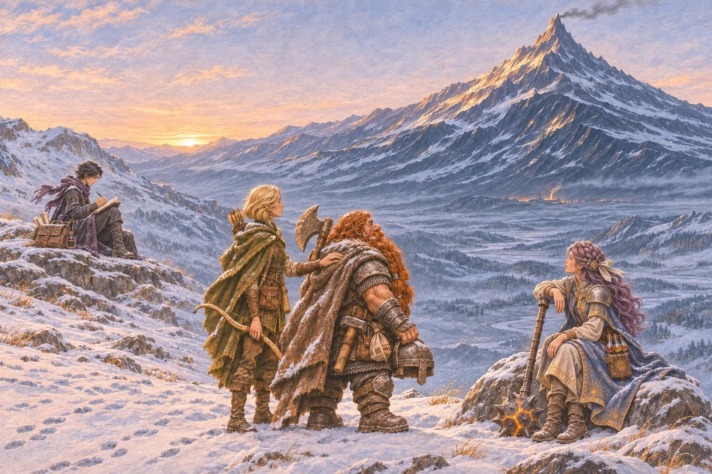
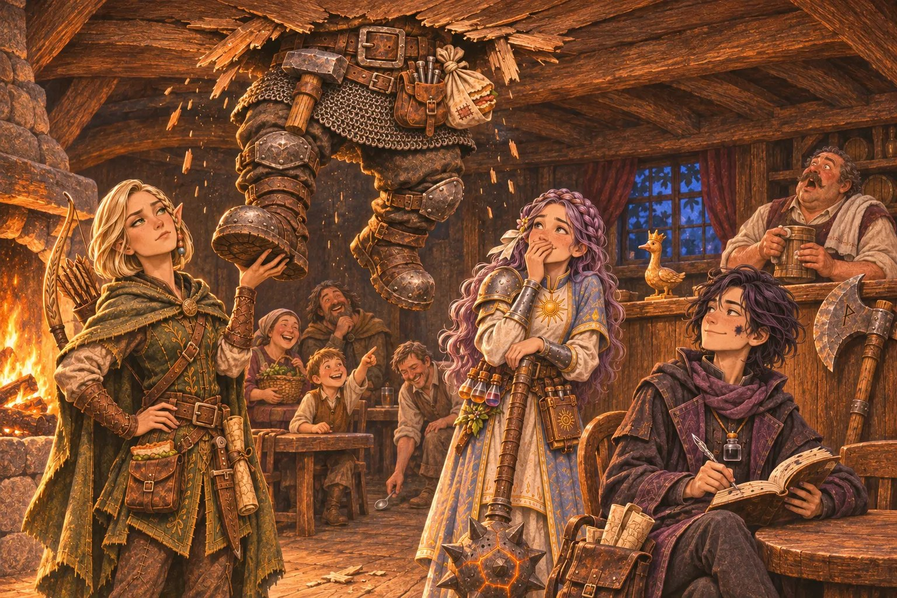
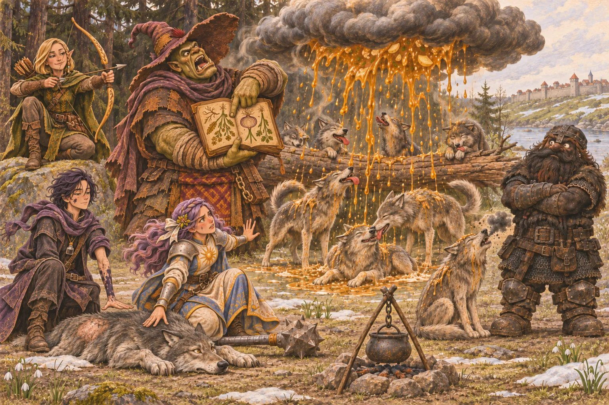

Дамбалдур Трампампури последний бутерброд
повесть о ворчливом гноме, который не любил делиться, и о горе, которая его ждала
Дамбалдур Трампампури последний бутерброд
в которой ворчливый воин, тихий маг, эльфийка-следопыт, храмовница с огненным моргенштерном и орк, не понимающий собственных заклинаний, отправляются в путь. Война началась из-за бутерброда. Бутербродом и закончится
❦
книга первая

Моим детям,
которые слушали эту историю первыми
и всегда спрашивали: «А что было дальше?»
Содержание
- IГде мы?читать →
- IIГусь и короначитать →
- IIIЭкзамен для новичковчитать →
- IVПервое заданиечитать →
- VОркчитать →
- VIБелое пятночитать →
♪ у каждой главы своя музыка — кнопка внизу справа
Карта

Пара слов о мире
Есть на свете земли надёжные, как гномья кладка: их давно нарисовали на картах, по ним ходят телеги, в них пекут хлеб и спорят о соседях. Там стоят людские королевства, шумят эльфийские леса, а в горе-вулкане живут гномы — народ ворчливый, сильный и очень любящий бутерброды.
Но бывает и так: стоит земле остаться без присмотра, стоит в ней завестись чудищам — и она начинает пропадать с карты. Сначала бледнеет, потом становится белым пятном. Тропы в белых пятнах переползают с места на место, а что там водится — не знает никто.
Для таких мест и существует гильдия авантюристов: её люди уходят в белые пятна, чтобы открыть их заново.
А ещё в этом мире идёт самая глупая война на свете. Гномы и эльфы не дружат уже так давно, что никто не помнит, с чего всё началось. Говорят, с бутерброда. Эта книга о том, как война закончилась. И о гноме, который ничего об этом не знал.
Действующие лица

Дамбалдур Трампампур
дворф-воин, умеющий коватьРыжая борода, огромный нос и огромное сердце. Ворчит на всё на свете, кроме бутербродов и друзей.

Римуру
тихий маг, капитанДелает вещи тяжёлыми и лёгкими, плетёт цепи из чернильной тьмы. Улыбается, когда шутят другие.

Элира
эльфийка-лучница, следопытВсегда знает, куда идти. Бережёт друзей больше всего на свете — и таскает кусочки чужих бутербродов.

Теона
храмовница светаЛечит светом, а моргенштерном с огненным сердцем промахивается нарочно, чтобы попасть. И всегда извиняется.

Орк-маг
новый другКолдует по-настоящему, но половину сам не понимает. Хотел бурю — получил тучку, которая льёт суп.
глава первая
Где мы?

Дамбалдур Трампампур проснулся оттого, что ему в бороду падал снег.
Так нельзя, и любой гном вам это скажет. Борода дана гному для красоты, для важности и чтобы хранить в ней мелкий инструмент, а снег в бороде тает, течёт за воротник и портит всё сразу: и красоту, и важность, и инструмент.
Он открыл один глаз и увидел над собой низкое серое небо, похожее на старое одеяло, из которого потихоньку сыплется пух. Тогда он открыл второй глаз, но небо от этого лучше не стало.
— Так, — сказал Дамбалдур. — Кто это сделал?
Ответа не было, только вокруг стояли сосны, высокие и тёмные, засыпанные снегом по самые макушки, и пахло от них холодной смолой, как от новой скамейки в мастерской. Стояли они как попало, а одна и вовсе с наклоном, и гном сразу это отметил, потому что был кузнецом и не любил, когда криво. За соснами поднимались белые горы с синими тенями в складках, а что было за горами, он не видел, и это ему тоже не понравилось.
Гном сел и проверил хозяйство, как делает каждый уважающий себя гном, прежде чем начать волноваться. Топор был на месте, и шлем на месте, а вмятины на шлеме все свои, родные, и про каждую он мог рассказать целую историю. Вот эта, маленькая и аккуратная, осталась от стрелы Элиры, хотя Элира до сих пор уверяла, что он сам под неё встал. Нагрудник тоже был на месте, и старая руна на нём, выбитая в незапамятные времена: что она значит, гном давно забыл. На поясе висели молот, огниво для костра и узелок, а в бороде, где им и положено, лежали напильник, моток проволоки и запасная заклёпка.
Узелок был цел, и в нём лежали четыре бутерброда: с сыром, с луком, с рыбой и с вареньем, четыре разных, как положено. Дамбалдур облегчённо выдохнул, и с ближайшей сосны с перепугу снялась ворона. Улетела она, правда, недалеко: села на соседнюю ветку и с большим интересом посмотрела на узелок, но этого гном не заметил.
— Ну хоть что-то в этом мире правильно, — сказал он.
И тут же нахмурился, потому что слово «мир» прозвучало странно, как чужое. Ни этих сосен, ни этих гор он не знал и понятия не имел, как сюда попал. Последнее, что он помнил, был тёплый вечер: друзья у огня, горячая похлёбка, Теона рассказывает, как в храме учили мыть котлы, а Элира спорит, что котлы так не моют. А сегодня кругом лес, снег и тишина, от которой звенело в ушах, как в пустом ведре. Такая тишина бывает только там, где сто лет никто не разговаривал.
Из снега рядом торчал серый камень, гладкий и круглый, как спина спящего кота. Дамбалдур стянул перчатку и положил на него ладонь. Так гномы здороваются с горами, а гора, если её вежливо потрогать, всегда что-нибудь отвечает: тихим гулом, теплом или ворчанием где-то глубоко внизу.
Гора под ладонью молчала.
— Спит, — определил он. — Крепко спит. И незнакомая.
Он надел перчатку, набрал побольше воздуху и крикнул так, как кричат гномы, когда зовут друг друга через три пещеры:
— Эй! Есть тут кто-нибудь?
— Есть, — ответили у него над головой. — И этот кто-нибудь хочет знать, почему ты так громко храпишь.
Он задрал голову и увидел Элиру: она сидела на толстой ветке, свесив ноги. Светлые волосы, подстриженные ровно по подбородок, у неё растрепались, на зелёном плаще лежал снег, а вид у неё был скучающий: похоже, сидела она там давно и ждала, когда он проснётся сам. Элира была эльфийкой и лучницей и всегда сидела где-нибудь повыше.
— Я не храплю, — сказал Дамбалдур. — Я дышу. Мощно.
— С соседней горы от твоего дыхания осыпались камни, — сказала Элира и бесшумно спрыгнула в снег, почти не оставив ямки. — Я тебя по ним и нашла. И встань со снега, пожалуйста. Застудишься.
— Я гном! Гномы не застужаются!
— В прошлый раз ты чихал две недели и говорил, что это пыль.
— Это и была пыль, — сказал Дамбалдур, но со снега всё-таки встал.
Он терпеть не мог, когда Элира говорила с ним, как бабушка с непутёвым внуком, тем более что на вид ей было лет двадцать, не больше. Сколько ей на самом деле, не знал никто, даже она сама.
— Остальных пока нет, — сказала Элира. Пальцы её уже бежали по тонкой косичке у виска, где висели три бусины, рыжая, фиолетовая и одна тёмная, как чернила, по одной за каждого друга.
Гном знал эту привычку: бусинами Элира проверяла, все ли её друзья на месте, и делала это всякий раз, когда волновалась, хотя вслух ни за что бы в этом не призналась.
— Римуру найдётся сам, — сказал гном. — Римуру всегда знает, где он.
— Сегодня, по-моему, никто не знает, где он, — сказала Элира.
— Значит, найдём, — сказал он. — Ты ведь у нас лучшая в мире ищейка.
— Следопыт, — поправила Элира.
— Я и говорю: ищейка.
Элира фыркнула, присела у сугроба и замерла. Смотрела она на снег так, как Дамбалдур смотрит на хорошо прокованный клинок: внимательно, долго и с любовью, потому что снег для неё был открытой книгой, где каждый след что-нибудь рассказывал.
— Туда, — сказала она наконец. — Кто-то шёл, падал, вставал, снова падал и, кажется, извинялся перед ёлкой.
— Теона, — сказали они хором.
— Идём, — распорядился гном. — Я впереди.
— Ты затопчешь следы.
Дамбалдур задумался, и было видно, что думать об этом ему неприятно, потому что ходить впереди он любил больше всего на свете.
— Я впереди, но сбоку, — решил он.
Теону, самую младшую из них, нашли у замёрзшего ручья. Лёд на ручье был зеленоватый, как бутылочное стекло, и под ним что-то тихонько булькало, словно ручей ворочался во сне. Теона сидела на камне в обнимку с моргенштерном и вежливо разговаривала с ёлкой, в которую только что врезалась.
Моргенштерн, если кто не знает, это такое оружие: длинная рукоять, а на конце железный шар в шипах, тяжёлый, как бочонок с гвоздями. Длинные фиолетовые волосы Теоны выбились из-под капюшона, на светлой храмовой робе налипли иголки. Наплечник и лёгкие наручи, железные щитки на руках от запястья до локтя, были все в снегу, потому что падала она, судя по следам, раз двадцать. Команда встретила её в тот самый день, когда она закончила храмовую школу и вышла за ворота с простым молотом в руках и с целой кучей правил в голове.
— Простите, пожалуйста, — говорила Теона ёлке. — Я вас совсем не заметила. Вы такая... зелёная.
— Теона! — крикнула Элира.
Теона подскочила, увидела друзей и просияла, и даже ёлка рядом с ней, кажется, обрадовалась. Она кинулась обниматься и обняла Дамбалдура вместе с моргенштерном, потому что выпустить его из рук не догадалась, и шипы деликатно звякнули о шлем. Шар был тяжёлый и тёплый, и сквозь трещины в нём мерцало оранжевое, как угли в печке. Внутри у шара жило ядро из лавы, жидкого горячего камня, какой течёт из огнедышащих гор.
Гном первым делом осмотрел шар: не треснул ли, не остыл ли. Этот моргенштерн он выковал сам, ещё в прежнем мире, вместе со старым гномом Ревой, когда храмовый молот стал Теоне мал, и волновался за него больше, чем за собственный шлем.
— Цел, — сказал он с облегчением и только потом посмотрел на хозяйку шара. — И ты, я вижу, тоже.
— Я думала, я одна, — сказала Теона, и голос у неё дрогнул. — Проснулась, а вокруг только снег. В храме нас учили, правило первое: если потерялся, сиди на месте и считай. Я сидела и считала до тысячи, чтобы не бояться. Дошла до четырёхсот двенадцати.
— А дальше? — спросила Элира.
— А дальше пошла посмотреть, нет ли кого за ёлкой, и врезалась в ёлку. Пришлось начинать сначала, потому что правило первое не разрешает считать на ходу.
Последним нашёлся Римуру, их маг и капитан. Его тоже нашла Элира, по одной-единственной цепочке следов, которая шла от скалы к скале ровно, как по линейке, и ни разу не вильнула. Римуру не падал, не храпел и ни во что не врезался. Он сидел под скалой, очень прямо, сложив руки на коленях, и смотрел туда, откуда они вышли, словно заранее знал, с какой стороны они появятся.
Был он худой, на вид совсем мальчишка, и в длинном тёмном плаще казался ещё тоньше, как ветка, на которую повесили одежду сушиться. Волосы у него были чёрные, как чернила, и на солнце отливали тёмно-фиолетовым, только солнца сегодня не было. На пальцах темнели чернильные пятна, которые не смывала никакая вода: Теона однажды пробовала оттереть их своим снадобьем, и пятна от этого только стали ярче.
— Я знал, что Элира найдёт, — сказал Римуру, поднимаясь. — Поэтому сидел на одном месте. Того, кто бегает, искать труднее.
— А если бы не нашла? — спросила Элира.
Римуру подумал, честно и не торопясь.
— Тогда я бы долго сидел, — спокойно сказал он.
Элира от этих слов стала чуточку выше ростом. Она восхищалась капитаном с того самого дня, как команда вывела её из подземелья, и, когда Римуру говорил, что верил в неё, ей хотелось немедленно найти ещё кого-нибудь, хоть медведя под снегом.
Четверо стояли посреди заснеженного леса, и Дамбалдур пересчитал всех по головам целых три раза, хотя голов было четыре и сбиться было трудно. Только теперь он заметил, что всё это время сжимает топор изо всех сил, словно топор тоже мог потеряться, и разжал пальцы.
— Ну, — сказал он. — А теперь кто-нибудь скажет мне, где мы?
Все трое, не сговариваясь, повернулись к Римуру. Так у них было заведено с самого начала: если никто не знает, что делать, знает капитан. В прежнем мире Римуру одним пальцем прижимал к полу целую стаю чудищ, поэтому все и сейчас ждали, что он поднимет руку и сразу станет ясно, где они.
Но Римуру руку не поднял.
— Магия спит, — сказал он. — Я её чувствую. Она здесь. Но не отвечает.
— Совсем? — спросила Теона.
— Я пробовал утром. Сорок раз.
— И что? — спросил гном.
— Сорок раз ничего.
Сказал он это ровно, как «доброе утро», но для капитана, который привык быть самым сильным, это было всё равно что для кузнеца сорок раз промахнуться мимо наковальни. Гном поправил шлем, хотя шлем и без того сидел ровно.
— И ещё, — сказал Римуру. — Здесь давно никто не ходил. На соснах ни одной зарубки от топора, и ни одной тропы. Даже звериные следы старые, их засыпало.
— Следы я читаю, — сказала Элира. — А куда нам вообще идти, не знаю. Первый раз за много лет не знаю.
Теона посмотрела на свои ладони, как будто проверяла, не пропал ли из них свет, которым её учили лечить, и промолчала, только крепче прижала к себе моргенштерн, как прижимают кошку, когда страшно.
Дамбалдур это заметил, но говорить ничего не стал, потому что слова в таких случаях выходили у него кривые, как гвозди, забитые левой рукой. Он просто встал так, чтобы загородить её от ветра, и сделал вид, что разглядывает сосну.
— Развели тут, — сказал он сердито. — Сейчас я попрошу удачи, и всё наладится.
— Может, не надо? — быстро спросила Элира. Гномье колдовство она видела много раз и знала, что удача от него приходит всегда, но никогда не приходит одна.
Но он уже начал. Сперва побурбурил пальцем по губам: бур-бур-бур. Потом шлёпнул себя по щекам, по левой и по правой, звонко, на весь лес, и эхо ответило ему из-за ручья. Дёрнул себя за оба уха разом, перекувырнулся через голову прямо в снегу, встал, весь белый, как пельмень в муке, и торжественно хлопнул себя по пузу.
Теона смотрела, открыв рот, а Римуру смотрел очень внимательно и не моргал.
Так гномы колдуют, и что выйдет, не знают даже сами гномы: в этом, говорят, весь интерес.
С сосны сорвалась шишка и упала гному точно в ладонь, а в шишке сидел орех, крупный и целый.
— Ха! — сказал Дамбалдур.
Следом с той же сосны съехал весь снег, сразу, одной большой белой шапкой, и весь он достался Элире.
Из сугроба сначала показалась светлая макушка, а за ней два очень спокойных глаза.
— Это на удачу, — объяснил гном.
— На чью? — спросила Элира.
Римуру подошёл ближе и долго разглядывал орех у гнома в ладони, а потом сугроб, из которого выбиралась Элира.
— У него магия не спит, — сказал он наконец.
Гному от этого взгляда стало и неуютно, и приятно сразу, потому что так капитан разглядывал только те вещи, которые потом обязательно пригодятся.
Орех Дамбалдур расколол о шлем и поделил на четверых. Вышло по крошке, но гном проследил, чтобы крошки были одинаковые.
— Ладно, — сказал он, жуя. — Значит, будем как все. Ногами. Идём вниз по ручью! Вода всегда выводит к жилью.
Никто не двинулся, потому что все снова смотрели на Римуру.
Римуру поднял голову, а когда он так поднимал голову, все замолкали и знали: сейчас он скажет, что делать, и спорить потом не захочется.
— Идём туда, где люди, — сказал он. — Где люди, там дороги. Где дороги, там карты. А по карте поймём, где мы.
Он помолчал, послушал, как под зелёным льдом булькает вода, и добавил:
— Вниз по ручью.
— Я так и сказал! — возмутился гном.
— Ты сказал громко, — объяснила Элира, вытряхивая снег из капюшона. — А он сказал, и стало понятно.
Сама она уже стояла на десять шагов ниже по ручью: с гномом Элира спорила обо всём на свете, а с капитаном соглашалась заранее.
— А я сказал первым, — добавил Дамбалдур, чтобы последнее слово всё-таки осталось за ним.
Римуру улыбнулся краешком рта: улыбался он редко, только когда кто-нибудь из команды бывал особенно смешным.
Гном развязал узелок, пересчитал бутерброды, хотя прекрасно знал, что их четыре, и объявил:
— Внимание. У нас четыре бутерброда. Делим на неделю. По кусочку в день.
Делил он как кузнец: вытянул из бороды проволоку, отмерил, поставил ногтем зарубки и только потом взялся за топор. Кусочки вышли одинаковые, ровные, как монеты, и такие же маленькие.
— По справедливости, — сказал гном. — Остальное никто не трогает. Особенно ты, Элира.
Элира невинно посмотрела в небо.
А второй кусочек гном молча подложил Римуру, который свой уже доел, хотя откусывал по крошке.
— Ты тощий, — сказал гном. — Смотреть больно.
Римуру спорить не стал. Он давно знал: если гном решил кого-нибудь накормить, проще съесть, чем объяснить, что не голоден.
Через снежные горы шли пять дней, и все эти дни были похожи друг на друга: снег сверху, снег снизу, снег в сапогах и снег за шиворотом. Когда ручей нырял под камни, их вёл Римуру.
Римуру шагал впереди и за день говорил слов десять, не больше. Иногда он останавливался, трогал камень носком сапога и молча сворачивал в сторону, хотя прямая дорога была ровнее. В первый раз гном даже заворчал, что так они до людей и к весне не дойдут. Через час выяснилось, что там, куда капитан не пошёл, был обрыв, присыпанный снегом, как пирог сахарной пудрой, и гном ворчать перестал.
— Откуда вы знали? — спросила Теона.
— Снег там лежал гладко, — сказал Римуру. — Слишком гладко. Так не бывает, если под снегом земля.
Элира на каждом привале забиралась повыше, на скалу или на дерево: оттуда ей было видно всех своих сразу, а тогда ей было спокойно.
А Дамбалдур здоровался с каждой горой: клал ладонь на камень, слушал, кивал и шёл дальше.
— Ну что? — спрашивала Теона.
— Спит, — отвечал гном. — Тут все спят. Сонное царство.
В первый же день Теона откопала под снегом травку от кашля, серую и мохнатую, как мышиное ушко, и обрадовалась ей, как подарку. Кашля ни у кого не было, но в храме учили, что лекарство собирают заранее. Элира показала ей, где растёт ещё, и при этом слегка задрала нос.
А хуже всех был второй день, потому что на второй вечер кончились бутерброды.
— Как это кончились? — спросила Теона. — Мы же делили на неделю.
Дамбалдур покраснел до самой бороды, а борода у него была рыжая, так что покраснел он, можно сказать, целиком.
— Я делил, — сказал он с достоинством. — И проверял, не испортились ли. Каждый. Тщательно.
— И как? — спросила Элира.
— Не испортились, — вздохнул гном. — Просто неделя получилась короткая. Гномья неделя. Она быстрее.
Элира нагнулась и подняла из снега чёрное блестящее перо, воронье, и на пере висела хлебная крошка с капелькой варенья.
А дело было вот как. Та самая ворона, что улетела от гномьего вздоха в первое утро, два дня летела за ними от сосны к сосне. Прошлой ночью, пока гном спал, обняв узелок, как подушку, она развязала его клювом и унесла всё, что там было, до последней крошки.
Дамбалдур сделал вид, что никакого пера не видит. Признаться, что гнома, кузнеца и воина обокрала обыкновенная ворона, было куда хуже, чем прослыть обжорой, и он решил, что обжорой быть почётнее.
Элира повертела перо в пальцах. Она всё поняла, но молча спрятала перо в рукав, потому что подшучивать над гномом любила больше всего на свете, а своих не выдавала никогда.
Римуру тоже видел перо, потому что Римуру вообще видел всё. Он ничего не сказал, только краешек рта у него дрогнул.
А Теона ничего не сказала. Она только вздохнула, совсем тихо, и у неё в животе заурчало, тоненько и жалобно, как котёнок под дверью.
От этого звука гному стало хуже, чем от любой ссадины, и он покраснел ещё сильнее, хотя сильнее было уже некуда.
— Что случилось? — спросил он сердито.
— Ничего, — сказала Теона. — Это не я. Это живот.
— Всё, — сказал Дамбалдур и встал. — Я пошёл. Всё исправлю.
— Куда? — спросила Элира.
Но он уже шагал к ручью.
Ручей здесь был широкий, с толстым синеватым льдом, под которым, если приложить ухо, было слышно, как сонно шевелится вода. Гном постоял над ним, примерился, как примеряется кузнец перед первым ударом, и стукнул по льду кулаком, совсем чуть-чуть, как ему казалось.
Лёд не треснул. Лёд взорвался. Вверх полетели куски, брызги и три сонные рыбы, а сам гном от собственного удара сел на лёд и поехал. Спиной вперёд, вниз по ручью, крутясь, как пуговица на тарелке, до самого поворота, и там скрылся, и только эхо ещё долго повторяло его «о-о-ой».
Его не было так долго, что Теона начала считать.
Когда Дамбалдур вернулся, отряхивая бороду от ледяной крошки, рыбы уже лежали на берегу: две на снегу, а третья у Римуру в капюшоне. Римуру вынул её оттуда двумя пальцами так спокойно, словно носил рыбу в капюшоне каждый день, и положил к остальным.
— Вот, — сказал гном. — Исправил. Чего смотрите? Я не для вас старался. Мне просто лёд не понравился.
Рыбу испекли на углях, и пахла она дымом и рекой. Теона съела свою до последней косточки и сразу начала клевать носом. А гном долго сидел у огня, сердито дул на кулак и делал вид, что кулак у него совсем не болит.
Пока все ели, Элира ходила посмотреть дорогу на завтра. Вернулась она быстрее, чем обещала, и без обычной своей усмешки, отвела гнома и Римуру на двадцать шагов за скалу и показала следы. Следы были огромные и глубокие, словно кто-то ронял в снег бочки, по одной на каждый шаг, и пахло от них мокрой шерстью.
— Ходили вокруг нашего костра, — сказала Элира. — Ближе не подошли. Стояли вот тут и смотрели.
Римуру присел над следом и долго его разглядывал, а потом показал на край ямки, где снег подтаял и снова застыл тонкой корочкой, как сахар на пряничке.
— Стояли долго, — сказал он. — Грелись издалека. Огня боятся, но огонь им нравится. Гасим.
Без костра было совсем холодно. Они сидели вчетвером, прижавшись спинами к скале, и холод забирался под плащи, как мыши в чулан. Теона, которую разбудил холод, стучала зубами, и от этого у неё на коленях тихонько позвякивал моргенштерн.
— Сейчас согрею, — шепнул Дамбалдур.
Элира, не говоря ни слова, отодвинулась от него подальше. Она слишком хорошо знала, что бывает, когда гном кого-нибудь согревает.
Колдовать громко было нельзя, и он колдовал шёпотом: тихонько побурбурил по губам, бур-бур, дёрнул себя за левое ухо и трижды погладил пузо, как кота.
Борода у него стала тёплая, по-настоящему тёплая, как камень у горна, у которого весь день работали, и Теона ахнула и протянула к ней руки.
И тут борода засветилась ровным рыжим светом, на всю скалу, как большой фонарь на ярмарке.
— Погаси, — прошипела Элира.
— Я не знаю как!
— Тебя видно с той стороны ущелья!
Элира сдёрнула с себя плащ и накрыла бороду вместе с гномом, и под плащом стало светло и уютно, как внутри фонаря. Туда сразу залезла Теона, а за ней, помедлив, и Римуру, сложившись почти вдвое, чтобы поместиться.
Сама Элира осталась снаружи, на холоде, сторожить.
— Сиди и не свети, — сказала она.
— Как я могу не светить, если я свечу? — глухо спросили из-под плаща.
Под плащом было тесно и пахло дымом, мокрой шерстью и немножко печёной рыбой.
— А мы вернёмся домой? — спросила Теона шёпотом.
Никто не ответил сразу, потому что каждый задавал себе этот вопрос уже два дня, только вслух никто не решался.
— Звёзды здесь другие, — сказал наконец Римуру. Он сидел у самого края и смотрел в щёлку между плащом и скалой. — Ни одной знакомой. Я смотрел каждую ночь.
Теона сглотнула так громко, что это услышали все, даже Элира снаружи.
— Значит, выучу эти, — сказал Римуру так же просто, как говорил «вниз по ручью».
Гном сразу поверил, что выучит: если капитан что-нибудь решал, он это делал, хоть за год.
— Правило девятое, — сказала Теона дрожащим голосом. — Храмовница не боится темноты.
— А ты боишься? — спросил гном.
— Правило не говорит, что нельзя.
Римуру подвинулся, освобождая ей щёлку.
— Посчитай звёзды, — сказал он. — Те, что ярче. Мне нужно знать, сколько их.
Теона приникла к щёлке и стала считать, старательно, шёпотом, загибая пальцы. На двадцать третьей звезде голос у неё стал тише, на двадцать седьмой совсем пропал, и она уснула, привалившись к гномьему плечу. Плечо у гнома было широкое, меховой воротник пах дымом, и спать на нём было удобнее, чем на любой храмовой подушке.
Гном так и не понял, правда ли капитану нужно было знать, сколько здесь ярких звёзд, или Римуру просто помнил, что Теона лучше всего засыпает, когда считает.
— Я один раз уже потеряла всех друзей, — сказала Элира снаружи, и бусины в её волосах тихонько стукнули друг о друга. — Давно. Больше не собираюсь. Куда вы, туда и я. А где дом, разберёмся.
— Разберёмся, — сказал Дамбалдур. — Вот найду того, кто нас сюда закинул, и поговорю с ним. Коротко.
Римуру не спал: он сидел прямо и смотрел в щёлку, в темноту, туда, где Элира нашла следы.
— Он ляжет через час после всех, — сказала Элира снаружи, не оборачиваясь. — Как всегда.
Тогда гном высунул из-под плаща руку и потянул Элиру за рукав.
— Залезай. Тут место есть.
— Я сторожу.
— Сторожи отсюда. Застудишься.
Элира помолчала, и ей очень хотелось ответить, что эльфы не застужаются, но она вспомнила про две недели чихания и про пыль и поняла, что спорить сейчас было бы нечестно. И залезла.
Борода светила до самого утра, всё слабее и слабее, как догорающая свечка. А гном ещё долго лежал с открытыми глазами и думал про дом. Какой дом и где он, Дамбалдур не знал. Просто думал. Тёплое такое слово, как варежка, которую сушили на печке.
На четвёртый день они шли по широкому белому склону, где сугробы лежали горбами, круглые и одинаковые, как караваи на противне. Ветер дул в спину, снег скрипел под сапогами, и Дамбалдур как раз объяснял Теоне, как правильно закаливать топор, когда Римуру поднял руку.
Все остановились, потому что, когда капитан поднимал руку, останавливались все, даже гном, хотя гном при этом обычно договаривал фразу.
— И тогда сразу в масло, — договорил гном. — Что такое?
— Тот сугроб дышит, — тихо сказал Римуру.
Все уставились на сугроб, а сугроб был как сугроб, большой, белый и лохматый. Только над его макушкой поднималась тоненькая струйка пара, как над кружкой с горячим молоком, и тут же таяла на морозе.
— Где? — спросил Дамбалдур.
Спросил он шёпотом, но от волнения шёпотом шахтёрским. В гномьих шахтах стучат сотни молотов, и, чтобы тебя там услышали, шептать приходится примерно так, как обыкновенный человек кричит «Пожар!». Шёпот гнома прокатился по склону, стукнулся о скалу и вернулся обратно.
Сугроб открыл глаза.
Он встал, и оказалось, что он втрое выше Дамбалдура. Белая косматая шерсть свисала с него сосульками, как со старой шубы, которую забыли на морозе, руки доставали до земли, а пахло от него мокрой псиной и прокисшей варежкой. И два маленьких синих глаза смотрели сверху, глупые и голодные.
— Тролль, — сказала Элира и выхватила стрелу.
Второй сугроб тоже встал, а за ним и третий.
Элира молча достала ещё две стрелы.
— Я же шёпотом, — обиженно сказал гном и перехватил топор. — Строимся! Я в середине, Элира...
— Нет, — сказал Римуру.
И гном замолчал. Он мог спорить с кем угодно, хоть с горой, хоть с королём, но, когда капитан говорил «нет» таким голосом, спорить почему-то не получалось.
— Ты впереди, один, — сказал Римуру. — Они пойдут на самого громкого. Элира, на камень. Теона, справа. Целься в тролля.
Элира уже взлетала на большой валун, будто её туда подбросили.
— Она же промажет! — сказал гном.
— Да, — сказал Римуру.
Первый тролль выдрал из склона глыбу льда размером с сундук и швырнул.
Глыба летела прямо в Теону. Теона стояла с моргенштерном в руках и смотрела на неё круглыми глазами, потому что в храме её учили многому, но про летающие сундуки изо льда там ничего не рассказывали.
Дамбалдур прыгнул ей навстречу, и глыба ударила его в шлем и раскололась на куски, а он покатился по снегу, как бочонок с горки.
— Новая вмятина, — сообщил он, поднимаясь и ощупывая шлем. — Вот теперь я злой.
Тролль, который кинул глыбу, посмотрел на свои пустые лапы, заглянул под ноги и оглянулся через плечо. Он никак не мог понять, куда она делась, и, похоже, подозревал, что её кто-то стащил.
Пока он искал, Элира выстрелила. Стрела ушла троллю в плечо, и тот заревел так, что с соседней скалы съехал снег.
Вторую стрелу Элира пустила в тролля, который подкрадывался к гному сзади, но стрела отскочила от его шерсти, как от валенка.
— Сзади! — крикнула Элира.
Было поздно: второй тролль уже сгрёб Дамбалдура в охапку и поднял, как мешок с картошкой.
— Поставь, где взял! — заорал гном, дрыгая ногами в воздухе. — Я тебе не полено! И кто так хватает? Локти шире! Спину ровнее!
Тролль не поставил. Он сжал лапы, медленно и сильно, как сжимают снежок. У Дамбалдура затрещали ремни нагрудника, и он перестал кричать, потому что кричать стало нечем: воздуха не было.
Кольчуга под нагрудником жалобно звякнула, и одно колечко лопнуло и улетело в снег, а Теона закричала его имя на весь склон.
— Пусти, — прохрипел Дамбалдур. — Ты мне… кольчугу помнёшь! Я её сам плёл!
Он упёрся локтями и надавил плечами. Лапы тролля медленно, со скрипом, разошлись в стороны, как старые ворота. Гном выскользнул, ухватил тролля за косматую лапу, крякнул и перебросил его через себя.
Тролль пролетел над сугробом, кувыркнулся и съехал по склону на спине, как на санках, и вид у него при этом был почти довольный.
А гном не рассчитал: он крутанулся вместе с троллем, отпустил его на полкруга позже, чем надо, и сам улетел в другую сторону. Прямо в сосну. Сосна загудела, как колокол.
Элира опустила лук и смотрела на гнома так внимательно, как не смотрела даже на следы, потому что следы она понимала, а как гном только что поднял тролля, понять не могла.
— Ты сейчас поднял тролля, — сказала она.
— Он сам, — отмахнулся гном, держась за сосну, чтобы та перестала кружиться. — Поскользнулся.
Первый тролль, тот, что со стрелой в плече, бросился на них, и тут Теона подняла моргенштерн.
— Извините, пожалуйста, — сказала она троллю. — Я сейчас буду вас бить. Мне очень неловко.
Шар загудел, как печка, в которую подбросили дров, и сквозь трещины полыхнуло оранжевым.
С Теоной всегда так: куда она целится, туда не попадает. В храме из-за этого её считали самой слабой ученицей, и никто там не догадался, что сила у неё огромная, просто летит не туда. Хочешь попасть в лёд, целься в тролля. Так она и сделала.
Шар ударил в лёд прямо у ног тролля. Лёд зашипел, как сковородка, на которую плеснули воды, из-под удара рванул горячий пар, и на миг ничего не стало видно. Когда пар рассеялся, тролль стоял мокрый, с голым розовым боком, где растаяла шерсть, и с ужасом смотрел на Теону.
— Я же предупреждала, — виновато сказала Теона.
Тролль попятился, прикрывая голый бок лапой, а Элира крикнула с камня:
— Они боятся тепла!
Третий тролль всё это время сидел в снегу, крепко зажмурившись: видно, думал, что раз он никого не видит, то и его никто не видит. Теперь он открыл глаза, встал и поднял над головой огромный снежный ком, целясь в Римуру.
Римуру стоял за камнем и не двигался, а тролль уже замахнулся.
Тогда Римуру нагнулся, слепил снежок, маленький и самый обыкновенный, и бросил его. Бросил спокойно, словно так и было задумано с самого утра.
Снежок полетел, а на середине пути вдруг потяжелел и пошёл вниз, как камень, и ударил тролля в живот с глухим «бумм», будто кто-то уронил на пол мешок муки. Тролль охнул, уронил свой ком себе на голову и сел.
Римуру смотрел на свою руку, а на снегу у его ног, там, где он лепил снежок, темнело маленькое чернильное пятнышко.
— Это ты? — спросила Элира.
Римуру не ответил, только осторожно сжал ладонь, словно поймал птицу и боялся её помять, и спрятал руку в рукав. Лицо у него осталось спокойным, но гном поспорил бы на свою бороду, что капитан очень рад, просто не показывает.
— Попало же, — сказал гном. — Остальное потом разберём.
А Элира уже смотрела совсем в другую сторону. Она заметила, что снег ниже по склону шевелится: тот тролль, которого гном перебросил, вместо того чтобы вернуться по своему следу, полз в обход, за камнями, прямо Теоне за спину. Стрелы от его шерсти отскакивали, это Элира уже знала, поэтому она прицелилась выше, в снежный козырёк над камнями, нависший, как шапка над бровями. Стрела ударила в самый край, козырёк ухнул вниз, и тролль второй раз за утро поехал по склону на спине.
— Сзади заходил, — коротко сказала Элира и достала новую стрелу. — Больше не зайдёт.
Тролли сбились в кучу. Их было трое: мокрый, сидячий и тот, что дважды съехал на спине и выбрался обратно весь в снегу. Они заворчали и снова пошли вперёд, медленно, плечом к плечу.
Римуру быстро оглядел склон, троллей и гладкий лёд, который ещё дымился после первого удара.
— Теона. Самый большой.
Сказал он это тихо, но Теона услышала и уже поднимала шар. Она прицелилась в самого большого тролля, очень старательно, даже высунула кончик языка.
Шар ударил в склон у них под ногами. Пар рванул столбом, и лёд под троллями стал мокрый и гладкий, как стекло. Все трое сели, поехали вниз, сначала медленно, потом быстрее, и с воем скрылись в метели. Последним уезжал тот, что с голым боком, и лицо у него было обиженное, как у кота, которого вынесли из кухни.
— Я ковал его для врагов, — сказал Дамбалдур, глядя им вслед и гордо поглядывая на моргенштерн. — Но для льда, выходит, тоже годится.
Гном сел в сугроб: борода у него была в снегу, шлем съехал на нос, а из-под шлема по лбу бежала тонкая красная струйка.
Римуру обошёл всех по очереди и каждому молча заглянул в лицо: Элире, Теоне, гному. Так он делал после каждого боя ещё в прежнем мире и, пока не обойдёт всех, на себя не смотрел. Только потом он сжал и разжал пальцы правой руки, проверяя, не прячется ли в них ещё один тяжёлый снежок. Ничего не случилось, и Римуру кивнул, как будто так и думал.
Теона опустилась рядом с гномом, положила ладонь ему на лоб и закрыла глаза. От ладони пошло тёплое золотое свечение, слабенькое, как свеча за окном в метель. Ссадина затянулась, но не до конца: осталась розовая полоска.
— Получилось, — удивлённо сказала Теона. — Свет ещё со мной. Только его мало.
— Хватит и такого, — сказал Дамбалдур.
— На что жалуетесь? — строго спросила Теона, потому что именно так в храме учили разговаривать с больными, даже если больной сидит в сугробе и сам прекрасно знает, на что.
— На троллей, — сказал гном.
Теона кивнула, будто это был очень правильный ответ, и на всякий случай подержала ладонь ещё немножко.
— Я считаю, это была блестящая победа, — объявил гном. — Особенно моя часть.
— Твоя часть, — сказала Элира, спрыгивая с камня, — это когда тебя носили на руках?
— Это была военная хитрость. Я подбирался поближе.
На пятый день горы кончились.
Они поднялись на перевал, узкий, как спина у лошади, и остановились, потому что дальше сразу идти никто не смог. Внизу лежала широкая долина, синяя от вечерней тени, с тёмными пятнами лесов и серебряной ниткой реки. А за долиной, выше облаков, стояла гора.
Она была огромная и тёмная, как старое железо, с острой вершиной, похожей на сломанный зуб, и над этой вершиной вилась тонкая струйка дыма. На склонах блестели чёрные гладкие скалы, точно кто-то пролил стекло, а оно взяло и застыло. А у самого подножия, далеко-далеко, мерцали тёплые огоньки, маленькие, как искры от костра.
— Обсидиан, — сказал Римуру. — Камень из огня. Это вулкан, гора, у которой внутри огонь.
Дамбалдур снял шлем и просто держал его в руке. Снег падал ему на рыжую макушку, а он не замечал.
Тут Элира и Теона испугались, причём куда сильнее, чем троллей, потому что гном молчал. А гном не молчал никогда. Он спорил, шутил, жевал, что-нибудь чинил и чем-нибудь был недоволен, и даже во сне бормотал, что подушку набивали криво.
Ветер донёс со стороны горы запах: дым, горячий камень и железо.
Запах кузницы.
У гнома защипало в носу. Он смотрел на огоньки у подножия, и ему хотелось туда так, как хочется под одеяло, когда замёрз, или домой, когда долго гулял. Но этой горы он не знал. Он был уверен, что видит её первый раз в жизни, и от этого было совсем непонятно, отчего так щиплет в носу.
Он присел, стянул перчатку и положил ладонь на камень перевала.
Камень был тёплый.
Тёплый он был изнутри, как бок печки, в которой с вечера пекли хлеб, хотя кругом лежал снег и солнце давно ушло за тучи.
— Не спит, — сказал Дамбалдур очень тихо.
— Дамбалдур? — Элира тронула его за плечо. — Ты как?
— Нормально, — сказал он и откашлялся. — Гора как гора. Большая. Дымит. Ничего особенного.
Он постоял ещё немного, а потом, ни с того ни с сего, сел в снег, обхватил колени, перекатился бочонком туда и обратно, трижды дунул себе в бороду и сказал горе: «Здрасьте».
У всех четверых развязались шнурки. Разом, на обоих сапогах, словно кто-то невидимый дёрнул за все шестнадцать кончиков. Теона наступила на свой и села в снег.
А следом стих ветер. Сразу, точно его заперли в сундук. Снег перестал лететь в глаза, и тучи над тропой разошлись в стороны, как занавески на окне, так что вся дорога вниз, в долину, стала видна до самого леса.
— Ой, — сказала Теона из сугроба. — У вас получилось!
— В лесу была шишка, — сказал Римуру, завязывая узел. — А тут целый ветер.
Сказал он это никому, самому себе, тем голосом, каким складывают в голове что-то важное.
Дамбалдур посмотрел на свои ладони, потом на гору, и что-то у него внутри тихонько повернулось, как ключ в замке, который давно никто не открывал.
— Повезло, — сказал он, натянул перчатку и поскорее надел шлем, чтобы никто не разглядел его лица. — Пошли. Нам к людям.
Все пошли вниз, только Римуру задержался на перевале. Он смотрел на гору, как смотрят на дорогу, по которой обязательно вернутся: на острую вершину, на чёрные стеклянные скалы, на струйку дыма и на огоньки у подножия. Гном видел, как у капитана шевелятся губы, и понял, что тот считает. Зубцы на вершине, огоньки, скалы, всё, что можно сосчитать, чтобы потом найти.
— Запомнил, — сказал Римуру и пошёл догонять.
И они пошли вниз, в долину, мимо горы.
Гном оглянулся только один раз. Огоньки у подножия мигнули.
Гора смотрела ему вслед.
глава вторая
Гусь и корона

Внизу, под снежными горами, снега почти не было, зато был голод.
Пять дней без еды гном пережить может, а вот пережить их молча не может ни один гном на свете. Дамбалдур шёл последним и ругал всё, что попадалось ему на глаза. Дорогу он ругал за то, что её клали без уровня, и она то горбилась, то проваливалась, как старый матрас. Кусты ругал за то, что растут как попало, без всякого порядка. А больше всех доставалось его собственному животу, который пел на весь лес, громко и жалобно, и ни разу не попал в ноты.
Впереди шла Элира. Она трогала пальцами камни, нюхала ветер и заглядывала под каждый куст, но человеческих следов не было нигде, и она сердито поджимала губы. За ней молча шёл Римуру, а позади брела Теона с моргенштерном на плече и спотыкалась на ровном месте. Раньше она извинялась перед каждой кочкой, но теперь у неё не осталось сил даже на это.
Гном замолчал на полуслове, догнал её и молча снял у неё с плеча дорожную сумку. Сумка была лёгкая, почти пустая, но гном повесил её себе на спину с таким лицом, словно взвалил наковальню.
— Тяжёлая, — пожаловался он на пустую сумку и понёс её дальше.
Ещё через десяток шагов он встал посреди дороги и упёр руки в бока.
— Так, — сказал он сердито. — Хватит, сейчас я всё устрою.
Элира молча, на всякий случай, натянула капюшон до самого носа, потому что в прошлый раз, когда гном что-то устраивал, ей на голову съехал весь снег с большой сосны.
Дамбалдур подёргал себя за бороду, побурбурил пальцем по губам, бур-бур-бур, крутанулся на пятке, шлёпнул себя по пузу, как по бочке, и сказал:
— Оп!
Теона смотрела во все глаза, потому что гномье колдовство она любила больше всякого цирка. Сначала не вышло ничего, но тут слева потянуло тёплым. Пахло свежим хлебом, только что из печи, с хрустящей коричневой корочкой и мягким горячим мякишем, от которого идёт пар, если разломить. Запах был густой и тёплый, хоть режь его ножом и мажь маслом.
Все четверо разом повернули головы налево.
— Хлеб с тмином, — серьёзно сказала Теона и вздохнула. — У нас в храме такой пекли по четвергам.
— Это не печка, — сказала Элира и потянула носом. — Это он наколдовал, а такой хлеб не съешь.
— Хороший хлеб, с корочкой, — обиделся гном. — Чем он тебе не нравится?
— Проверь, — сказал Римуру.
Элира кивнула и полезла на самую высокую сосну у дороги. Лазала она так ловко, словно родилась на дереве: раз, два, и светлая макушка уже качалась среди веток, выше всех.
— Дым есть, настоящий, из трубы, — крикнула она сверху. — Налево, за лесом, а рядом поле, полдня ходу, не меньше.
— Налево, — сказал Римуру.
— А вы боялись, — довольно сказал Дамбалдур.
— Я не боялась, я проверяла, — сказала Элира, спрыгивая на дорогу.
Плохое выяснилось через сто шагов: запах не отставал. Он бежал рядом с ними, как щенок на верёвочке, залезал в нос и рассказывал про корочку, про горячий мякиш и про то, как всё это хрустит. Есть от него хотелось в десять раз сильнее, а до настоящей печки было ещё полдня ходу. Хуже всех пришлось Элире, потому что для следопыта нос всё равно что молот для кузнеца, а её нос теперь чуял только хлеб, хлеб и снова хлеб.
— Выключи, — попросила она из-под капюшона. — Я из-за твоего хлеба больше ничего не чую, тут тролль пройдёт, а я подумаю, что это булка.
— Оно не выключается, так что шевелите ногами, — мрачно сказал гном.
Запах шёл за ними до самого полудня. К этому времени дорога вывела их на край обрыва и побежала по нему, узкая, как полка в чулане. Справа стоял густой тёмный лес, а слева земля обрывалась вниз, и далеко-далеко внизу, где от одного взгляда кружилась голова, шумела по камням серая река. Теона шла у самого леса и на обрыв старалась не глядеть.
А потом Элира остановилась, потому что нос ей сейчас не помогал, зато помогали уши, а уши у эльфов длинные и острые, и для них даже мышь в траве топает, как лошадь.
— Тихо, — сказала она. — Не мы одни его нюхаем.
В кустах у дороги затрещало. Треск был тяжёлый и неторопливый, словно сквозь лес кто-то нёс шкаф. Кусты раздвинулись, и на дорогу вышел кабан.
Ростом он был с корову. Щетина на загривке стояла дыбом, серая и жёсткая, как проволока, а из пасти торчали два жёлтых клыка, загнутых, как серпы. Маленькие глазки глядели сердито и жадно, и кабан поднял пятачок и шумно, со свистом, потянул воздух.
Гном оглядел щетину знающим глазом.
— Хорошая, — сказал он с уважением. — Из такой щётки для горна вяжут, годами служат.
— Он не на продажу, так что отойди от него, — сказала Элира.
Но кабан уже нашёл, что искал. Пятачок повернулся к гному и замер, потому что запах хлеба шёл от гнома, от его бороды и усов, как дым от костра.
Кабан опустил голову и побежал.
Дамбалдур успел только расставить ноги. Он поймал кабана за оба клыка, и его отбросило на шаг, потом ещё на шаг, а сапоги пропахали в дороге две глубокие борозды, как плуг на огороде.
Совсем недавно, в снежных горах, гном перебросил через себя тролля, но тогда он был сыт. Теперь пять голодных дней сидели у него в руках и в коленях, и колени дрожали, как студень на тарелке. Кабан сопел, упирался и толкал, и гном ехал назад, медленно, шаг за шагом, и ничего не мог с этим поделать.
А сзади, в трёх шагах, был обрыв.
Элира выхватила стрелу и выстрелила кабану в бок. Стрела вошла в щетину и застряла там торчком, как перо в шляпе, а кабан этого даже не заметил. Тогда Элира натянула тетиву снова, целясь туда, где у кабана глаз, и опустила лук, потому что прямо перед кабаньим глазом торчал гномий шлем.
— Не могу, ты мешаешь! — сказала она. — Он идёт на запах, а запах на тебе!
— Я заметил! — прохрипел гном.
Римуру не двинулся с места. Смотрел он мимо кабана: на обрыв, на сапоги гнома и на Теону, и было видно, что он считает. Колдовать он не стал, потому что магия в нём только просыпалась и могла ударить не в кабана, а в друга. Он сказал, не повышая голоса:
— Теона. Пояс.
Гном проехал ещё шаг, и до обрыва осталось два.
Теона бросила моргенштерн на дорогу, потому что поднять его у неё уже не было сил. Она подбежала сзади, схватила гнома за пояс обеими руками и упёрлась.
— Правило шестое, — сказала она сквозь зубы. — Своих не отпускают.
Гном перестал ехать, а сапоги Теоны ушли в дорогу по щиколотку, и кабан сопел, толкал и не мог сдвинуть их ни на палец. Теона думала, что просто держит изо всех сил. Она и не догадывалась, что любая другая храмовница давно летела бы в реку вместе с гномом и кабаном, потому что не знала, какая она сильная.
Кабан фыркнул, сунул пятачок гному прямо в бороду, втянул воздух и задрожал от жадности, и с клыков на рыжую бороду потекло.
— Не слюнявь! — взревел Дамбалдур. — Я её два дня расчёсывал!
— Запах твой, — сказал Римуру. — Ты его сделал, ты и убирай.
— Чем же, если у меня руки заняты?!
— Руки не нужны, — сказал Римуру.
Гном моргнул: а ведь правда. Обычно гномы колдуют руками, но, если очень надо, умеют и без рук. Дамбалдур скосил глаза к носу, побурбурил губами безо всякого пальца, бр-р-р, прямо кабану в пятачок, громко чихнул и сказал:
— Кыш!
Запах хлеба соскочил с гнома весь, разом, как кот с печки, и уселся кабану на спину.
Кабан замер, понюхал воздух и оглянулся на собственный хвост, потому что хлебом теперь пахло оттуда. Он рванул за хвостом и выдернул клыки из рук гнома. Хвост пах хлебом и убегал, и кабан закружился на месте, всё быстрее и быстрее, только кружился он, к несчастью, прямо к обрыву, туда, где сидела на дороге Теона.
Тут Элира наконец выстрелила, и выстрелила мимо кабана. Попасть в кабана она сейчас не могла, зато в землю перед самым его пятачком могла сколько угодно. Первая стрела воткнулась в дорогу у кабаньего носа, вторая рядом, третья ещё ближе, тук, тук, тук, как дятел по сосне. Кабан шарахнулся, развернулся и с визгом умчался в лес догонять самого себя.
— Вот теперь, — сказала Элира и опустила лук, — ты не мешаешь.
Стало тихо.
Гном сел прямо на дорогу, и руки у него тряслись. На нагруднике белела свежая царапина от клыка, и прошла она у самой старой руны, которую гном носил всю жизнь, хотя давно забыл, что она значит. Гном проверил руну пальцем, а когда убедился, что она цела, выдохнул длинно-длинно, как кузнечные меха.
Теона отпустила его пояс и села рядом.
— Я, кажется, порвала вам ремень, — сказала она.
— Ремень починю, — сказал гном и помолчал. — Держала хорошо.
Больше он ничего не сказал, но Теона порозовела от удовольствия, потому что «хорошо» от гнома стоит дороже, чем «замечательно» от кого-нибудь другого.
Гном понюхал свою бороду и скривился. Запах хлеба ушёл вместе с кабаном, а от гнома теперь пахло кабаном, крепко, на всю дорогу, как из хлева.
У Элиры снова заработал нос, и первое, что он ей сообщил, ей совсем не понравилось. Элира понюхала воздух, ничего не сказала и молча перешла на другую сторону дороги.
Зато потом она присела у кабаньих следов и долго их разглядывала. В каждом отпечатке копыта блестела прилипшая солома, а рядом валялись пустые колоски, жёлтые и колючие.
— Кабаны воруют с полей, — сказала она. — Этот ходил к людям каждую ночь, и по его тропе мы дойдём быстрее.
— Хоть какая-то от него польза, — сказал гном, поднимаясь.
Кабанья тропа вывела их из леса прямо к людям, и земля людей началась с забора.
Забор был длинный и кривой, из серых жердей, и Дамбалдур только вздохнул, глядя на него. За забором тянулось поле, где из-под последнего снега торчала жёлтая щетина прошлогодней соломы, а дальше стоял низкий дом с соломенной крышей, похожей на мохнатую шапку. Из трубы поднимался тот самый дым, который Элира видела с сосны. Пахло коровой, печкой и мокрыми досками, и после пяти голодных дней это был самый лучший запах на свете.
Выскочил пёс, лохматый и весёлый, понюхал бороду Дамбалдура, чихнул и с визгом удрал за сарай.
А на заборе висели дети. Детей было трое, и все трое смотрели на путников во все глаза, как на ярмарочное чудо.
— Мама! — заорал самый маленький. — Мама! Там ходит ёжик в железе!
— Я не ёжик, я гном! — возмутился Дамбалдур.
— Мама, ёжик говорит, что он гном!
Маленький слез с забора, подошёл и постучал кулаком по шлему, и шлем загудел.
— Звенит, — сообщил маленький.
— Конечно, звенит, — сказал Дамбалдур. — Хорошая сталь всегда звенит, а плохая брякает, как пустое ведро. Стучи вот сюда, тут звонче.
И подставил шлем другим боком.
Средний мальчик тем временем ходил вокруг Теоны и не сводил глаз с её моргенштерна.
— А можно подержать?
— Нельзя, он тяжёлый, — серьёзно сказала Теона.
— Ты же держишь.
— Я привыкла.
Она поставила шар на землю, чтобы мальчик посмотрел поближе, и земля под шаром просела. Мальчик попробовал качнуть его двумя руками, потом плечом, потом спиной, пыхтя и краснея, а шар этого даже не заметил.
— Мы его с Ревой ковали, — гордо сказал гном, не убирая шлема из-под кулака маленького. — Рева, это гном такой, мастер, там, где мы раньше жили. Три дня ковали без сна, и внутри у шара сидит настоящая лава.
— А можно потрогать лаву? — спросил мальчик.
— Нельзя, — хором сказали гном и Теона.
Девочка постарше на моргенштерн даже не взглянула. Она смотрела только на Элиру: на светлые волосы, на лук за спиной, на бусины в волосах и больше всего на острые уши, которые торчали из волос, как два листика.
— Ты настоящая эльфийка? — шёпотом спросила она.
Элира присела, чтобы оказаться с девочкой вровень. Детей она любила, хотя и делала вид, что ей всё равно.
— Самая настоящая, — так же шёпотом ответила она.
— А правда, что эльфы воруют бутерброды?
Дамбалдур так и застыл с подставленным шлемом.
— Так дедушка говорит, — объяснила девочка. — Что давным-давно эльфы стащили у гномов самый большой бутерброд на свете, и с тех пор гномы с эльфами воюют.
На крыльце сидел тот самый дедушка, белый, как одуванчик, с трубкой в зубах. Он поглядел на уши Элиры, поднялся, кряхтя, и молча унёс в дом корзину с яйцами, подальше от эльфийки.
Дамбалдур медленно повернулся к Элире, а Элира медленно отвела глаза.
— Я такого не помню, — сказала она. — В мои-то годы много чего не помнишь.
Сказала она это легко, но на самом деле ей было совсем не легко. Своих эльфов она не помнила ни одного, кроме себя самой, и не могла даже сказать, правда это или выдумка. Ей было обидно и стыдно сразу, за чужую древнюю кражу, к которой она не приложила и пальца.
— А я знаю, что это правда, — вдруг сказал Дамбалдур. — Откуда знаю, не знаю. Вот тут знаю.
Он постучал кулаком по нагруднику, там, где сердце, и нагрудник гулко отозвался, как пустой котёл.
Сказал он это и сразу пожалел. Они с Элирой спорили и подкалывали друг друга всю жизнь, это было у них вместо «доброго утра», и на такие слова она обычно отвечала колко, до дыма из гномьей бороды. А тут Элира промолчала, а когда Элира не отвечает на подколку, значит, дело плохо.
Мама детей оказалась женщиной доброй и очень занятой: в одной руке ухват, в другой ведро. Ёжику в железе и его друзьям она вынесла кувшин молока и горячую лепёшку на четверых, и палец у неё был замотан тряпкой.
— Даром брать нельзя, это правило второе, — сказала Теона. — Дайте, пожалуйста, руку.
Она взяла палец в свои ладони и закрыла глаза. Под тряпкой коротко мигнуло золотым, как солнечный зайчик, и порез затянулся.
Хозяйка долго смотрела на свой палец, сгибала его и разгибала, а потом ушла в дом и вынесла вторую лепёшку.
— Лечение окончено, спасибо за лепёшку, — серьёзно сказала Теона.
Лепёшки делил Дамбалдур, и делил топором, впервые в жизни на глаз, без проволоки и зарубок, потому что живот торопил и ждать не желал. Себе он положил самый маленький кусок.
— Я не голодный, — сказал он и отвернулся.
Отвернулся он нарочно, чтобы никто не видел, как он смотрит на чужие куски.
После фермы Элира натянула капюшон, глубоко, до самых бровей, и заправила под него волосы вместе с ушами.
— Ты чего? — спросил гном.
— Солнце, — сказала Элира.
Теона серьёзно задрала голову и долго осматривала небо, от края до края.
— Солнца нет, я проверила, там туча, — сказала она.
— Будет, — сказала Элира.
Только ничего не помогало, потому что эльфийские уши длинные, под капюшоном им было тесно, и на капюшоне сверху выросли две острые шишки. А стоило где-нибудь в кустах пискнуть птице, как шишки сами собой поворачивались на звук, словно в капюшоне сидели два котёнка. Элира была следопытом и слушала всегда, даже когда не хотела.
— Давайте я вам заплету, — предложила Теона. — У нас в храме так заплетали младшим, туго-туго, чтобы ни один волосок не выскочил.
Элира подумала и сняла капюшон. Теона заплетала на ходу, старательно, высунув кончик языка, и плела так крепко, точно вязала канат для корабля. Когда она закончила, короткие волосы Элиры были собраны в две коротенькие косички, торчащие, как хвостики. А уши остались и теперь торчали ничем не прикрытые, на виду у всего света, как два пирожка над корзинкой.
— Ой, — сказала Теона. — Так ещё лучше видно.
— Раньше было видно уши, — сказал гном. — А теперь видно только уши.
Элира молча расплела косички и натянула капюшон до того низко, что видела теперь одни свои сапоги. Только следопыт, который видит одни свои сапоги, это половина следопыта, и Элира, не глядя, пошла прямо на придорожный столб.
Римуру, не оборачиваясь, остановил её одной рукой за плечо, за шаг до столба.
— Кто прячется, про того и думают плохое, — сказал он.
— Я ничего не брала.
— Я знаю, — сказал Римуру и пошёл дальше.
Элира очень уважала Римуру и обычно, когда капитан что-то говорил, делала это сразу и без спора. Но сейчас она была гордая, обиженная и голодная, а гордость, обида и голод вместе слушаются плохо. Поэтому она только затянула завязки капюшона потуже.
Гном шёл позади и сердито сопел, а потом догнал её и пошёл рядом.
— Что случилось? — спросил он сердито.
— Ничего, — сказала Элира из-под капюшона.
— Ясно, — сказал гном, сдвинул шлем на затылок, как перед трудной работой, и зашагал быстрее.
Как исправляют древние войны, он не знал, но гномы никогда не останавливаются из-за таких мелочей.
К вечеру они добрались до таверны.
Она стояла у самой дороги, кривая и тёплая, как старый валенок на печке. Окна у неё светились жёлтым, из трубы шёл дым, а над дверью на цепях качалась вывеска с гусем в короне. Гусь глядел важно, как настоящий король, хотя корона у него съехала набок. Изнутри пахло луковой похлёбкой и свежим хлебом, на этот раз настоящим.
Дамбалдур остановился и оглядел таверну снизу доверху.
— Угол завален, крыша просела, — сказал он. — А трубу клал человек, который печку видел один раз, издалека. Заходим, пока не рухнуло.
И пошёл первым, потому что придумал, как всё исправить. Шёл он широко, растопырив локти, как ходят гномы, когда хотят занять собой побольше места, чтобы за ним никому не было видно Элиру. План был хороший, только одно было плохо: гном был широкий, но невысокий, а Элира высокая, и её капюшон с двумя шишками торчал у него над шлемом, как флажок над крепостью.
Внутри было людно, шумно и жарко. Но стоило им войти, как шум стих, словно его прихлопнули крышкой. Все уставились на рыжую бороду Дамбалдура и на капюшон над ней, а капюшон, услышав тишину, тут же шевельнул обеими шишками. Кто-то уронил ложку, а толстый дядька у окна торопливо накрыл свою тарелку шапкой.
Дамбалдур прислонил топор к стойке. На стойке сидел деревянный гусь в короне, такой же, как на вывеске, только с отбитым клювом.
За стойкой стоял хозяин, широкий и румяный, с полотенцем на плече. Он протёр одну и ту же кружку четыре раза подряд и наконец сказал:
— Эльфийка. И гном. В моей таверне. В один день.
— Я не эльфийка, — сказала Элира из-под капюшона.
— А что же у вас там шевелится?
Элира помолчала, и шишки на капюшоне тоже замерли.
— Мысли, — сказала она.
— Это плохо, что эльфийка и гном? — спросила Теона хозяина.
— Это небывало, — сказал хозяин. — Последнего эльфа тут видели при моём деде, а гномов я только на картинках видел. Они, говорят, из своей горы носу не кажут. Вы надолго? Мне надо сбегать за женой, а то она не поверит.
— Нам бы поесть, — сказал Римуру. — И узнать, где мы.
— Где вы, это просто, — обрадовался хозяин. — Это таверна «Гусь и корона», а до большого города Ратвальда полдня пути по дороге. Только по лесу ночью не ходите. Волки нынче с гор спускаются, никогда такого не было. Говорят, наверху им жарко стало.
Элира, не оборачиваясь, вынула из колчана стрелу, повертела её в пальцах, проверила перо и убрала назад, как делала всегда, когда слышала про опасность впереди.
Четверо переглянулись: ни «Гусь», ни «Ратвальд» им ничего не сказали.
— А королевство как называется? — спросил Римуру.
— Королевство Трёх Рек, как же ещё.
Это им тоже ничего не сказало. Теона тихонько взяла Элиру за руку, потому что ей стало страшно, а держаться за Элиру было уже не так страшно. Римуру ничего не сказал и смотрел в окно, туда, где за долиной темнела большая гора с дымком на макушке.
— А огни под той горой? — спросил он, не оборачиваясь.
— Застава, — сказал хозяин. — Дальняя, у самой подошвы. Стражники жалуются, что там вечно дымом пахнет. А что выше, не знаю, туда никто не ходит.
И продолжал, ничего не заметив:
— А поесть, это сейчас. Садитесь под главную балку, там лучшие места. Таверну мой прадед строил, балку я сам менял! Балка у меня крепче гор!
В таверне опять стало тихо, и все, кто сидел рядом, поглядели на гнома. Гномов они видели только на картинках, но что гномы думают про горы, знал каждый.
— Крепче гор? — тихо переспросил Дамбалдур.
Хозяин гордо похлопал по столбу.
Теона зажала рот ладонью, а Римуру спокойно отошёл от стойки на два шага и сел за ближний стол: похоже, он знал, что сейчас будет. А Элира вздохнула и встала прямо под главной балкой.
Дамбалдур медленно положил руки на стойку. Борода у него встопорщилась, как у рассерженного кота, и хозяин попятился.
— Крепче гор?! — переспросил гном. — Да я горы знаю! Я мечи ковал, когда твой прадед пешком под стол ходил! Сейчас я тебе покажу, какая она крепкая!
И он подпрыгнул, хотя хотел только постучать по балке кулаком, как стучат по бочке, чтобы узнать, полная она или пустая. Но ноги у гномов сильные, а возмущение у Дамбалдура было ещё сильнее ног.
БАМ.
Он влетел головой прямо в потолочную балку. Балка треснула, доски разошлись, и Дамбалдур застрял в потолке по самые плечи, вместе со шлемом, бородой и возмущением. Снизу торчали только ноги в тяжёлых сапогах, и ноги болтались.
И тут вся таверна грохнула хохотом.
— Чаще всего я вижу его именно так, — сказала Элира тем, кто стоял поближе. — В прежних краях он так проверял потолки три раза, и два раза потолок проиграл.
— Снимите меня немедленно, — глухо донеслось сверху. — Тут нечего смеяться, я проверял вашу балку.
Тянули вчетвером: Элира, Теона, Римуру и хозяин. Элира тянула одной рукой, потому что другой держала капюшон. Дамбалдур выскочил из дыры, как пробка из бутылки, сверху посыпались щепки и пыль, а у хозяина в руках остался сапог.
Хозяин долго смотрел на дыру в потолке, а потом расхохотался от души, даже полотенце упало у него с плеча.
— Ну, гном, ну силища! — сказал он, вытирая слёзы. — Знаешь что, ужин и ночлег за счёт заведения, не каждый день у меня гномы потолки бодают. Дыру заделывать не буду, буду гостям показывать.
— Дыру показывай, — сказал Дамбалдур, натягивая сапог. Он задрал голову к балке и мрачнел на глазах. — А вот это показывать стыдно.
— Что?
— Балку. Сучок на сучке, скоба ржавая, держалась она у тебя на честном слове. Я такое оставить не могу, я потом спать не буду.
— Да она тридцать лет висит!
— Тридцать лет ей было страшно, — сказал гном. — Теона, подержи.
Теона встала на лавку и подняла балку одной рукой. В другой у неё была ложка, потому что ужин уже принесли, а выпускать ложку Теона не хотела ни за что.
— Вам не тяжело? — слабым голосом спросил хозяин.
— Нет, спасибо, — вежливо сказала Теона. — А что, должно быть?
Элира забралась наверх, на соседнюю балку, откуда было удобно подавать гвозди. Только подавала она их одной рукой, по одному и медленно, а другой рукой держала капюшон.
— Двумя руками подавай, а то до утра провозимся! — сказал гном снизу.
— Одна занята.
— Чем?!
— Капюшоном.
Гном сказал что-то длинное и неразборчивое про эльфов и про капюшоны и протянул руку за следующим гвоздём.
Римуру держал фонарь и молча показывал пальцем, куда бить. Показывал он всегда точно туда, куда гном и сам собирался ударить, и это гнома немножко злило, а немножко радовало. Дамбалдур снял с пояса молот, вытянул из бороды проволоку и запасную заклёпку и взялся за дело.
И тут он стал совсем другим, потому что, пока гном что-нибудь строит или чинит, у него даже борода делается довольная и мягкая, а молот стучит ровно и весело, тук-тук, тук-тук, как сердце. Гном перетянул балку проволокой в три витка, посадил её на заклёпку и расклепал заклёпку аккуратно, как пуговку на праздничной рубахе.
Когда он слез, балка сидела как влитая. Дыра в потолке стала ровной и круглой, с гладким краем, хоть луну в неё показывай, а на заклёпке была выбита маленькая руна.
— Что она значит? — спросил хозяин.
— «Не прыгать», — сказал Дамбалдур.
Гости захлопали, а гном сделал вид, что не слышит, и долго протирал молот рукавом. Ему было приятно и неловко сразу, а для гнома это самое трудное чувство на свете.
Хозяин наконец сбегал за женой. Жена пришла заспанная, в платке, и оглядела острый капюшон, рыжую бороду и круглую дыру в потолке.
— Циркачи, — сказала она и ушла досыпать.
Ужин был простой и горячий: густая похлёбка с луком, ломти хлеба с хрустящей коркой, а в каждой миске сверху плавали поджаристые шкварки. Дамбалдур ел молча и раз в минуту поднимал глаза на свою заклёпку, проверяя, держит ли. Теона уснула прямо за столом, не доев, с ложкой в руке, и Римуру отодвинул свою миску и подложил ей под щёку свёрнутый плащ.
Элира утащила из миски Дамбалдура шкварку, и он это видел, но промолчал.
В другой день он поднял бы крик на всю таверну, потому что таскать у гнома из миски, может быть, самое страшное преступление на свете. Но сегодня у Элиры был такой капюшон, что ругаться не хотелось.
Ночью, когда все легли, гном обошёл комнату. Он подоткнул Теоне одеяло и поправил Римуру сапоги, чтобы стояли ровно, носок к носку. А сам сел у окна и смотрел в темноту, туда, где за долиной стояла гора. Смотрел, пока не поймал себя на этом, и тогда сердито задёрнул занавеску, но сразу же отдёрнул обратно. Что его так тянет к этой горе, гном не понимал, и от этого ему было не по себе, как от сапога не на ту ногу.
Сверху, с крыши, доносился шёпот: Элира опять не спала. Она сидела на коньке крыши и повторяла их имена, все три, по кругу, как считалку: Римуру, Теона, Дамбалдур, Римуру, Теона, Дамбалдур.
А потом шёпот на крыше споткнулся, и Элира сказала, тише прежнего, ещё одно имя: «Элира. Эльфийка». Раз эльфов здесь не любят, ей, видно, надо было проверить и это: кто она такая и не стыдно ли ей быть собой.
Гном открыл окно и высунул голову в холодную темноту.
— Эй, наверху, — сказал он.
Крыша молчала, только внизу в конюшне вздохнула во сне лошадь.
— Эльфов я не люблю, — сказал гном. — У нас, у гномов, так заведено, с прадедушек. — Он почесал бороду. — Только ты не эльфы, ты Элира.
Больше он ничего не сказал. Он сдёрнул со своей кровати одеяло и молча закинул его вверх, одной рукой, и одеяло легло на конёк точно рядом с Элирой. В первый раз за всю дорогу гном рассчитал силу как надо.
— Оно пахнет кабаном, — сказали с крыши.
— Другого нет.
С крыши долго не отвечали, но одеяло назад не прилетело. А потом сказали:
— Иди спать, ёжик в железе.
Гном закрыл окно и лёг. Голос у Элиры был сердитый, но гном слышал, что сердитый он только сверху, а внутри улыбается.
Римуру тоже не спал и сидел у другого окна, глядя туда же, куда смотрел гном. Далеко за тёмной долиной, над горой, светилась тонкая красная полоска, как раскалённая проволока в горне.
Утром, пока остальные собирались, Римуру подошёл к гному.
— Шишка, тёплая борода, хлеб, кабан, — сказал он. — Всё это было далеко от горы. А ветер был у самой горы. Чем ближе к ней, тем сильнее твоя магия.
— И что это значит? — спросил гном.
— Узнаю, — сказал Римуру.
Ушли они на рассвете, до завтрака. Жена хозяина ещё спала, печь стояла холодная, а Теона сказала, что будить людей, которые тебя бесплатно накормили, невежливо.
К полудню они вышли к Ратвальду.
Сначала над дорогой поднялись каменные башни с красными, синими и жёлтыми флагами, которые хлопали на ветру, как бельё на верёвке. За ними показались серые толстые стены и высокие ворота: в них прошла бы телега с сеном, а сверху ещё одна. Перед воротами шумела целая река народа: телеги, торговцы с корзинами, стражники в синих плащах, дети, собаки и гуси, и все кричали разом, каждый своё.
Город был до того огромный, что даже Дамбалдур на минуту перестал ворчать. А когда снова начал, то начал с ворот, подошёл поближе и постучал по железу.
— Петли хорошие, — сказал он с удивлением. — Смотри-ка, умеют, когда хотят.
— Люди есть, дороги есть, осталось найти карту, — сказал Римуру.
— А платить за неё чем? — спросила Элира.
Все посмотрели на Дамбалдура, потому что карманы у гнома были самые глубокие. Он вывернул один карман, потом другой, и из карманов выпали гвоздь, пуговица и крошки.
У Теоны нашлась травка от кашля, завёрнутая в чистый платочек. Римуру молча показал пустые ладони в чернильных пятнах. Элира развела руками, и капюшон при этом съехал ей на нос.
У ворот висел деревянный щит, весь заклеенный объявлениями, старыми и новыми, одно поверх другого, как чешуя у рыбы. Одно было крупнее остальных, с красной печатью внизу:
«ГИЛЬДИЯ АВАНТЮРИСТОВ ищет новичков. Опыт не обязателен. Храбрость обязательна. Кормим».
Дамбалдур прочитал объявление два раза. На слове «кормим» он задержался особенно надолго, словно учил его наизусть.
— Вот, — сказал он и ткнул в объявление толстым пальцем. — Вот это мне нравится, вот это правильный мир.
— А авантюристы, это кто? — спросила Теона.
— Те, кого кормят, — сказал гном, не отрывая глаз от последнего слова.
Вообще-то авантюристами здесь звали тех, кто ходит туда, куда другие боятся: в чащи, в горы и в пустые места на карте. Но гном прочитал в объявлении самое главное.
Ниже мелкими буквами было что-то приписано, и Теона наклонилась и прочитала вслух, старательно, по словам, как читала когда-то в храме:
— «Экзамен сегодня в полдень. Опоздавших не ждём. Слабонервных не берём. Эльфов, гномов и прочих тоже берём».
Шишки на капюшоне Элиры разом поднялись.
Рядом со щитом стояла торговка с корзиной пирожков, румяная и громкая. Она поглядела на шевелящийся капюшон, потом на гнома и подтянула корзину к себе поближе.
— Прочих пускай берут, — сказала она соседке. — А эльфов-то зачем? Эльф, он и в гильдии эльф, так что держи кошелёк, Марфа.
Дамбалдур набрал полную грудь воздуху. Борода у него встала дыбом, а уши под шлемом покраснели, и сейчас торговка должна была услышать про себя всё, что гномы думают о людях с длинными языками.
Но Элира положила руку ему на плечо.
— Не надо, я сама, — сказала она.
Элира терпеть не могла, когда за неё заступаются. За других заступаться она привыкла сама, а когда заступались за неё, ей было неловко, словно её несут на руках через лужу.
Она развязала завязки и откинула капюшон.
Уши у неё поднялись, длинные и острые, как наконечники стрел, и кончики у них порозовели от холода и от волнения. Светлые волосы рассыпались по щекам, и бусины в них стукнули друг о друга. Вокруг стало тихо: торговка замолчала, Марфа замолчала, и даже гусь у ворот перестал гоготать и вытянул шею.
Элира повернулась к Дамбалдуру, единственному гному здесь, а может, и во всём королевстве. Она поклонилась ему низко и красиво, по-старинному, как, наверное, кланялись эльфы много лет назад, и сказала громко, чтобы слышали все:
— Дамбалдур Трампампур. Говорят, давным-давно эльфы стащили у гномов бутерброд. Я этого не помню. Но мне неловко за тех, кто стащил. Мелочь, конечно, но некрасивая. Извиняюсь.
Гном открыл рот, закрыл и открыл снова. Он стал похож на чайник, который вот-вот засвистит, но никак не выберет, с какой ноты начать. Никогда в жизни перед ним не извинялся ни один эльф, и что с этим делать, он понятия не имел.
— Принято, — сказал он наконец и откашлялся. — От меня. — Он подумал и добавил: — Но шкварку ты мне всё-таки должна.
— Видел?
— Гномы всё видят.
Торговка фыркнула, а потом рассмеялась, громко, на весь рынок, и отпустила свою корзину. Засмеялись и другие вокруг, а Теона сияла, словно извинились перед ней самой. А Римуру улыбнулся.
— Хорошее начало, — сказал он.
— Начало чего? — спросила Элира.
Римуру не ответил и только смотрел на объявление, где эльфы и гномы стояли в одной строчке, а потом на гнома и эльфийку, которые стояли рядом под этим объявлением.
Капюшон Элира больше не надевала. Уши у неё стояли гордо, как у кошки, которая сама решила, куда ей идти.
Дамбалдур оглянулся и увидел, что далеко-далеко, на краю неба, над горой поднимается дым. Вчера на закате он был тонкий, как нитка, а теперь стал гуще и темнее, будто кто-то там, внутри, раздувал огонь.
На башне ударил колокол.
— Который час? — спросила Теона.
— Полдень, — сказал Римуру. — Бежим.
глава третья
Экзамен для новичков

Бежать по чужому городу трудно, а бежать по нему на пустой с утра живот ещё труднее. Но хуже всех приходится тому, у кого ноги короче, чем у друзей, а борода длиннее, потому что борода на бегу всё время лезет в рот.
— Не отставай! — крикнула Элира через плечо.
— Я не отстаю! — пыхтел Дамбалдур. — Я прикрываю сзади!
На башне бил полдень, и каждый удар колокола падал на крыши Ратвальда тяжело и гулко, как ведро в колодец. На четвёртом ударе они проскочили рыбный ряд, где пахло селёдкой на всю улицу, а на пятом перепрыгнули через гуся, который вышел на середину мостовой и уступать дорогу никому не собирался.
Впереди всех бежала Теона. В храме её учили, что в толпе оружие держат высоко над головой, и она держала. Над её фиолетовыми волосами плыл огромный железный шар в шипах, и сквозь трещины в нём тлело оранжевое, как угли в печке. Люди расступались перед ним, как вода перед носом лодки, и даже тот упрямый гусь.
Гном бежал следом по расчищенной дороге, и хотя обычно он лез первым, бежать за Теоной оказалось удобно, будто идёшь по тропинке, которую кто-то уже протоптал в глубоком сугробе.
Элира бежала поверху: вскочила на бочку у лавки, с бочки на навес, с навеса на низкую крышу и понеслась по черепице, лёгкая, как кошка.
— Направо, а там через площадь! — крикнула она с крыши.
А Римуру не бежал, он шёл, быстро и ровно, и почему-то не отставал ни на шаг. Гном этого никогда не понимал: Римуру за всю жизнь ни разу не бегал и ни разу не опоздал.
Дорогу к гильдии им на бегу крикнул стражник, но дом они узнали бы и без него. Он стоял на краю площади, высокий, из тёмного дерева, с резными окошками, и был похож на старый бабушкин буфет, в котором хранят всё самое важное. На крыше вместо флюгера торчал железный сапог и поворачивался носком туда, куда дул ветер. Над дверью были вырезаны какие-то слова, и Римуру на ходу задрал голову, но прочитать не успел.
Десятый удар. Одиннадцатый.
С двенадцатым ударом они влетели в дверь все разом и застряли в ней втроём, потому что дверь была одна, а гном широкий, да ещё с топором за спиной. Теона застряла с шаром над головой, Элира свалилась с навеса прямо гному на плечи, а сам гном сидел посередине крепко, как орех в щипцах. Римуру уже стоял внутри и поправлял рукав, и как он проскользнул мимо гнома, никто не заметил.
— Выдохни, — сказала Элира.
Дамбалдур выдохнул, и они высыпались внутрь, как горох из мешка.
В большом зале пахло воском, старой бумагой и немножко мышами. Под потолком на цепях висели деревянные колёса со свечами, а на стенах щиты, вёсла, рыбацкие сети и чучело совы с одним стеклянным глазом. У стен толпилось человек двадцать пять: здоровенные парни с мечами, две сестры с копьями, одинаковые, как две ложки из одного набора, и дядька с сетью через плечо. Все они обернулись на шум и уставились на рыжую бороду, острые уши и шар в шипах.
А одну стену целиком занимала карта, огромная, больше ворот таверны, и старая-престарая, так что по углам она свернулась трубочкой, как сухой лист. Реки на ней были синие, леса зелёные, дороги рыжие, как морковка. Только по краям карта белела, словно у художника кончилась краска, а новую ему так никто и не купил.
Римуру подошёл к карте и остановился, а Теона встала рядом, поднялась на цыпочки и долго водила глазами по рекам и лесам. Гном сразу понял, что она ищет что-то знакомое: свой храм, свою улицу, хоть одну дорогу, по которой ходила раньше.
— А где здесь мы? — спросила она тихо. — Где наш дом?
Римуру провёл пальцем по рекам, по дорогам, по городам и дошёл до самого края, где кончалась краска.
— Здесь его нет.
От этих спокойных слов всем четверым стало ещё дальше от дома, как бывает, когда проснёшься ночью в чужой комнате и не можешь вспомнить, где дверь. Элира тронула бусины в волосах, все три, одну за другой.
Римуру смотрел на белые края долго, как смотрят на загадку, и дольше всего на верхний край, где рисунок выцветал и обрывался. Что-то он там нашёл: это гном понял по тому, как у капитана на миг сузились глаза. Но вслух Римуру ничего не сказал.
За большим столом посреди зала сидела женщина, сухая и прямая, как свечка, с седым узлом на затылке. На носу у неё сидели круглые очки на шнурке, перед ней лежала толстая книга, тяжёлая, как каравай, а рядом стояла чернильница и торчал пучок перьев. К столу была прислонена трость, сделанная из обломка весла.
Дамбалдур посмотрел на трость и остановился как вкопанный.
— Ясень, обточено по руке, — сказал он. — Набойка медная, посажена на клин.
Он помолчал и добавил совсем тихо:
— Хорошая работа.
Элира удивлённо оглянулась: только что, у ворот Ратвальда, он похвалил петли, да и то с удивлением. А сейчас похвалил тихо и тепло, при чужих людях, и для гнома это было почти то же самое, что спеть песню.
— Опоздали, — сказала женщина, не поднимая глаз.
— Колокол ещё гудит, — тихо сказал Римуру.
Женщина прислушалась, и правда: колокол ещё гудел, тонко-тонко, как комар над ухом.
— Хм, я госпожа Щук, принимаю экзамен. Подходите по одному: имя и что умеете.
— Римуру, маг.
— Какая магия?
— Тёмная, только пока почти ничего не умею.
Госпожа Щук обмакнула перо и записала в толстую книгу: «Маг. Тёмный. Почти ничего не умеет».
— Элира, стреляю из лука.
— Давно?
— Тысячу, а может, две.
Госпожа Щук посмотрела на неё поверх очков, потому что на вид Элире было лет двадцать, и в книге появилось: «Лучница. Шутит». Элира прочитала это вверх ногами и поджала губы, ведь она и не думала шутить.
Теона шагнула к столу, прижимая моргенштерн к груди, как подушку.
— Теона, храмовница, здравствуйте. У вас очень красивый сапог на крыше.
«Храмовница. Вежливая», — написала госпожа Щук.
Теона заглянула в книгу и порозовела.
— А можно, пожалуйста, ещё написать «сильная»? — спросила она. — Мне это очень нужно.
Госпожа Щук посмотрела на огромный шар в шипах, а потом на тоненькую Теону.
— Покажете, напишу.
Теона кивнула так серьёзно, словно ей поручили нести знамя через весь город. Для неё это слово было важнее обеда, и гном знал почему.
Потом госпожа Щук поискала глазами четвёртого. Над краем стола виднелась только макушка шлема.
— Четвёртый, встаньте, — сказала она. — Вас не видно.
— Он стоит, — сказала Элира. — Сейчас он возьмёт табурет.
Дамбалдур подтащил к столу табурет, залез на него, упёр руки в бока и выставил вперёд рыжую бороду, как полководец выставляет флаг.
— Дамбалдур. Гном.
Зал притих, и даже сова на стене, казалось, вытаращила свой единственный глаз.
— Гномов у нас не было сто лет, — сказала госпожа Щук. — А бороды, знаете ли, бывают накладные. В прошлом году один привязал мочалку и сказал, что он гном.
— Накладные, — повторил Дамбалдур очень вежливо.
От этой вежливости Теона спряталась за Римуру. Она давно знала, что когда гном кричит, это не страшно, он так разговаривает, а вот когда гном становится вежливым, лучше стоять за кем-нибудь.
Госпожа Щук ухватила его за рыжую косу бороды и дёрнула.
— Ай!
— Настоящая, — с уважением сказала госпожа Щук.
Тут она заметила старую руну у него на нагруднике. На руну она смотрела дольше, чем на бороду, и даже сняла очки, протёрла их и надела снова, а потом записала: «Гном, 1 шт. Борода настоящая».
— А чего так, сто лет? — спросил гном, слезая с табурета.
— Не приходили.
Дамбалдур вдруг понял, что за всю дорогу не встретил ни одного гнома. Ни в снежных горах, ни на ферме, ни в таверне, ни в этом огромном городе, где было всё на свете, от гусей до капусты, гномов не было нигде. И от этого внутри у него стало пусто, как бывает, когда выпадет зуб: вроде ничего не болит, но язык всё время тянется в дырку.
— Ну и ладно, — сказал он громко, чтобы язык перестал тянуться. — Мне и одного гнома хватает.
Рядом кто-то засмеялся: это смеялся рыцарь, высокий и кудрявый, в латах, начищенных до того блеска, что в них отражались свечи, как в новой кастрюле. На шлеме у него качалось белое перо, пушистое, как кошачий хвост.
— Гном, эльфийка и девочка с колотушкой, — сказал он. — Я Бравур Блестящий, запомните имя. На тропе увидите мою спину.
— Это моргенштерн, — вежливо поправила Теона. — Колотушкой отбивают мясо.
Но гном обиделся куда сильнее неё.
— Колотушка?! — сказал он. — Да в нём лава внутри, мы его с Ревой три дня без сна ковали!
Он оглядел рыцаря от пера до сапог, медленно, как на ярмарке оглядывают лошадь, которую продают слишком дорого.
— Латы тонкие, — определил он. — Ковали левой ногой.
Римуру смотрел на колени рыцаря, где под блестящими латами на штанах засохла серая грязь.
— Грязь старая, — сказал он негромко. — В несколько слоёв, одна на другой.
— Значит, латы он чистит, а штаны ленится, — сказал гном.
Экзамен был из трёх частей: дверь, умение и тропа. Госпожа Щук вывела всех во двор, постукивая тростью по ступенькам, и встала на крыльце.
— Гильдия ходит туда, где никто не был, — сказала она. — Там всё заперто, завалено и заросло, поэтому сначала дверь. Каждую часть команда сдаёт вместе или не сдаёт.
Двор гильдии был широкий, утоптанный и пах сеном. У забора стоял сарай, кривой, как старый башмак, рядом клетка с почтовыми гусями, а у дальней стены соломенная мишень с красным кругом посередине, похожая на огромный пирог с вишней. Посреди двора стояла дверь. Просто дверь в дубовой раме, без стен и без дома, словно кто-то нарисовал дом, а потом стёр всё, кроме двери, и заперта она была на засов с той стороны.
— Откройте, как хотите, — сказала госпожа Щук.
Бравур Блестящий вышел первым, просунул в щель кинжал, поддел засов и распахнул дверь с поклоном, как будто пропускал королеву.
— Сдал, — сказала госпожа Щук. — Закройте за ним, и следующие.
Первой из них к двери вышла Теона. Она подняла свой огромный моргенштерн, прикусила губу и поглядела на засов сурово, как глядят на задачку, которую уже три раза решили неправильно.
— Только не целься, — шепнул гном. Он знал, что Теона лучше всего попадает тогда, когда целится мимо.
— Правило четвёртое: на экзамене хитрить нельзя, — шепнула Теона.
И прицелилась честно, как учили в храме, прямо в засов.
И потому попала в сарай.
Сарай стоял в шести шагах от двери, а теперь он там лежал, весь, ровным слоем досок, и сверху, как крышка на кастрюле, лежала его крыша. Из-под досок выбралась курица, взъерошенная и сердитая, посмотрела на Теону одним круглым глазом и ушла, прихрамывая, жаловаться за угол.
— Простите! — сказала Теона курице, а потом на всякий случай и госпоже Щук.
Госпожа Щук только поправила очки и посмотрела на доски так, словно считала в уме, сколько они стоили.
Теона вернулась к своим, волоча шар за собой, и он оставлял в пыли глубокую борозду.
— В храме говорили, что я самая слабая, — тихо сказала она. — А может, я не слабая? Может, я просто мажу?
Гном знал эту историю: в храме, где Теона училась в прежнем мире, ученицы по утрам били соломенное чучело. А Теона попадала куда угодно, только не в него: в колокол, в забор, однажды в котёл с супом наставницы. Чучело оставалось целым, и наставницы решили, что сил у Теоны нет совсем. Что она просто мажет, не догадался никто.
— По правилам снесла, честно, — сказал гном. — Я этот шар ковал и знаю, как он бьёт. Сарай со мной согласен.
Он сам подошёл к двери, а двери гномы открывают по-своему, и на это стоило посмотреть, поэтому весь двор вытянул шеи.
Римуру посмотрел на клетку у забора и ничего не сказал. В клетке сидели пятеро почтовых гусей, важных и серых, с трубочками для писем на лапах, и один был толще всех, а трубочка у него была запечатана красным сургучом.
Дамбалдур дёрнул себя за правое ухо, потом за левое и встал на одну ногу, как цапля на болоте. Он постучал себя по шлему, как стучат к соседям, свистнул в два пальца и показал двери кулак.
— Ну?
В доме гильдии что-то щёлкнуло, а потом протяжно скрипнуло, как старый дед, когда встаёт с лавки.
— Кладовая, — сказала госпожа Щук, не оборачиваясь. — Три года не могли открыть, ключ утонул в колодце.
Следом щёлкнуло во дворе, и дверца гусиной клетки распахнулась сама. Гуси вышли один за другим, важные, с трубочками на лапах, построились клином, как на картинке в книжке, и ушли в ворота. Толстый шёл последним и ни разу не оглянулся.
А дверь посреди двора стояла запертая.
— За кладовую спасибо, — сказала госпожа Щук. — За гусей вычту.
— Ладно, — сказал гном и поплевал на ладони. — Тогда по-людски.
И постучал в дверь кулаком, вежливо, три раза, как стучатся в гости.
На третий раз дверь вылетела из рамы вместе с засовом и петлями. Она пролетела через весь двор, перемахнула забор, мелькнула над крышами, маленькая, как игральная карта, и скрылась, а все ещё долго смотрели ей вслед в пустое небо. Где-то далеко, за три улицы, грохнуло, залаяла собака и загоготали чужие гуси.
— Открыл, — сказал Дамбалдур.
— Дверь открывают так, чтобы потом закрыть, — сказала госпожа Щук. — А эту унесло куда-то к гусям. Не сдано. И сарай.
Гном с упрёком посмотрел на свой кулак, как смотрят на собаку, которая опять удрала со двора. Кулак, как всегда, сделал больше, чем его просили.
Дальше шло умение, и госпожа Щук села на крыльце, положив толстую книгу на колени.
Элира вышла с луком и спросила, во что стрелять.
— Во что хотите.
Элира не торопилась: «девочку с колотушкой» она рыцарю ещё не простила.
Тренькнула тетива, и белое перо слетело со шлема Бравура, пролетело через весь двор и прибилось стрелой к самой середине мишени, прямо в красный круг. Бравур потрогал голый шлем, поискал перо в волосах, не нашёл и молча сел на скамейку.
Госпожа Щук в первый раз за день подняла брови.
— Сараи я видела, храмовница, — сказала она. — Что ещё умеете?
— Лечу светом небольшие раны, — сказала Теона и выпрямилась.
— Покажите.
Теона огляделась, но, как назло, во дворе все были целые, без единого синяка, и только Бравур остался без пера, а перо светом не вылечишь. И тут из-за угла выглянула курица. Гребешок у неё был ободран о доски, а одно крыло висело, как неправильно сложенный зонтик.
Теона опустилась на колени прямо в пыль и протянула руки, и курица, подумав, подошла. Между ладонями у Теоны затеплился золотой свет, мягкий, как от свечки, если смотреть на неё сквозь пальцы, и гребешок у курицы стал красным и ровным, а крыло сложилось как надо. Курица встряхнулась, громко сказала «ко» и ушла, словно ничего и не было.
— Вылечила, — сказала Теона и с надеждой посмотрела на толстую книгу.
— Сами снесли, сами вылечили, — сказала госпожа Щук. — Это не умение. Это вы долг отдали.
— Это честно, — сказала Теона, подумав.
Голос у неё был ровный, а уши красные, и гном понял, что ей очень обидно. Просто обижаться вслух Теона считала невежливым.
— Теперь маг, — сказала госпожа Щук и показала тростью на гирю у крыльца. — Вот гиря, сделайте с ней что-нибудь.
Гиря была чёрная, круглая, с ручкой сверху, похожая на чугунок, которому приделали ухо, и двое здоровенных парней с мечами вынесли её вдвоём, отдуваясь.
Римуру долго смотрел на гирю.
— Один раз у меня потяжелел снежок, — сказал он.
— Гиря и так тяжёлая, удивите меня.
Римуру посмотрел на гирю, потом на госпожу Щук и на перо у неё в руке. Он протянул руку, и чернила на кончиках его пальцев потемнели и поползли выше, медленно, как тень от тучи ползёт по полю, до самых костяшек. Дамбалдур затаил дыхание и даже перестал сопеть, а такое с ним случалось нечасто.
Гиря стояла как стояла, а госпожа Щук охнула. Перо в её руке клюнуло вниз, как курица за зерном, и воткнулось в стол. Она потянула его одной рукой, потом двумя, но перо не поднималось. На странице под ним расползалась маленькая клякса, похожая на жука.
— Вы сказали: удивите, — сказал Римуру.
Дамбалдур подошёл, взял перо двумя пальцами, как берут из каши соринку, и подал госпоже Щук.
— Тяжёленькое, — согласился он.
— Велено было гирю, а маг сделал по-своему, — сказала госпожа Щук и промокнула кляксу. Но на Римуру она посмотрела внимательнее, чем на всех остальных за день, и долго не отводила глаз. — Лучница сдала, а вместе не сдано.
— Две части из трёх мы провалили, — сказал Римуру. — Осталась тропа.
А Теона сжала рукоять моргенштерна до белых пальцев, потому что тропа была её последним случаем показать, что она не слабая.
Тропа начиналась за гильдией, на пустыре, обнесённом высоким забором, и по углам его дымили бочки с сырой соломой. Дым стоял густой и белёсый, пах мокрым сеном и печкой, которую растопили не теми дровами, и в нём не было видно собственных сапог.
— Это учебное белое пятно, — сказала госпожа Щук. — Место, про которое никто ничего не знает. На том конце флажки: дойти, взять флажок и вернуться. Кто придёт, когда песок кончится, тот не сдал.
Она перевернула песочные часы ростом с Дамбалдура, и песок в них зашуршал, как дождик по крыше.
Все бросились в дым, и первым бежал Бравур Блестящий, а латы его гремели, как ведро, которое катится по лестнице.
Гном рванул было следом, но Элира поймала его за меховой воротник.
— Стой, иди за мной шаг в шаг.
Она присела, потрогала землю ладонью, как в темноте ощупывают знакомую стену, и оглянулась на Римуру. Римуру кивнул и на этот раз встал в самый хвост, чтобы видеть в дыму всех, и Элира повела их вбок, вдоль забора.
Слева в дыму кто-то с треском влетел в бочку, а справа двое столкнулись лбами и вежливо сказали друг другу «ой».
— Откуда ты знаешь, куда идти? — пропыхтел Дамбалдур.
— Тут до нас сто раз бегали новички, — сказала Элира. — Туда они неслись как попало, а обратно шли шагом, усталые, по одной дорожке, вот она и утоптана. По дыму не бегают, по дыму ходят.
И правда, шагом они обогнали половину бегущих.
Тут из дыма с рёвом выкатилось чудище. Оно было соломенное, лохматое, ростом с телегу, а глаза у него были из начищенной жести и блестели, как две сковородки. Чудище скрипело на каждом шагу, а внутри у него кто-то сердито шипел «левее толкай».
Шипения гном не услышал, потому что сам пыхтел громче.
— Чудище! — заорал он и выхватил топор. — Теона, бей!
На экзамене хитрить нельзя, поэтому целиться мимо, как она привыкла, Теона не стала. Она честно прицелилась чудищу в самую середину и размахнулась изо всех сил.
И, как всегда, промахнулась: шар просвистел мимо соломенного бока и угодил в бочку рядом.
Бочка разлетелась, и мокрая солома с густым дымом накрыли чудище с головой. Внутри закашляли в два голоса, кто-то громко чихнул, и чудище развернулось и, скрипя колёсами, укатило обратно в дым.
— Я опять промахнулась, — грустно сказала Теона и опустила моргенштерн.
— Внутри сидели двое, — сказал Римуру. — Ты промахнулась в самую нужную сторону.
Теона посмотрела на разбитую бочку, потом туда, где в дыму скрипело уползающее чудище, и тихонько ахнула. Она только сейчас поняла, что было бы, если бы она попала.
— Жаль, — сказал Дамбалдур и с сожалением убрал топор. — Я только разогрелся.
Флажки торчали из кучи песка у дальнего забора, красные, на тонких палочках, как свечки на торте. Теона взяла один и понесла бережно, двумя руками. Обратная дорога шла по верёвочному мостику через яму с грязью.
Яма была широкая и круглая, а грязь в ней серая и густая, как каша, которую забыли на плите. Пахла она болотом и старыми сапогами, и на ней то и дело вздувались пузыри и лопались с громким чмоком.
В яме сидел Бравур Блестящий, и грязь доходила ему до груди.
— Помогите, тону! — кричал он. — Латы тянут!
По мостику над ним один за другим бежали другие новички. Мостик качался и скрипел, но никто не останавливался. Один на бегу крикнул «Извини, время!» и даже не обернулся.
Теона шла по мостику впереди гнома и вдруг встала посередине, резко, и гном с разгону ткнулся шлемом ей в спину, а мостик закачался, как качели.
— Правило третье, — сказала Теона. — Кто позвал на помощь, тот уже свой.
Римуру остановился рядом. Он считал шаги с самого начала, с первой песчинки, и всегда знал, сколько осталось.
— Если встанем, не успеем, — сказал он. — Песка осталось совсем чуть-чуть, а идти ещё далеко.
Теона посмотрела туда, где за дымом стояли часы, хотя их отсюда не было видно. Гном знал, о чём она думает: если они встанут, слово «сильная» в толстой книге так и не появится, и всё будет, как в храме.
— Тогда не успеем, — сказала Теона. Голос у неё дрогнул, но с места она не сдвинулась.
Римуру посмотрел на неё внимательно и коротко кивнул.
— Вытаскиваем.
— А я что делаю? — рявкнул Дамбалдур.
Он уже лежал животом на краю ямы и тянулся к рыцарю, и когда он успел туда слезть, не заметил даже Римуру. Только до рыцаря гному не хватало целого локтя.
Тогда Теона легла на мостик и протянула рыцарю рукоять моргенштерна, как протягивают палку тому, кто провалился под лёд, и прицелилась ему прямо в руку. Рукоять шлёпнулась в грязь далеко в стороне, грязь плюнула рыцарю в лицо, и он съехал ещё глубже.
— Ой, — сказала Теона.
Гном сполз к самой грязи, а Римуру молча встал ему на сапоги, чтобы гном не уехал в яму целиком. Гном дотянулся, ухватил рыцаря за ворот и потянул, но грязь чавкнула и не отдала, и Бравур съехал по самые плечи.
— Латы дрянь, и сам хвастун, — сказал гном. — Сверху тебя не вытянуть, она держит.
Он встал, постоял, глядя в яму, потом отстегнул топор и сунул Элире.
— Подержи, а то утонет, а новый тут не скую: угля приличного нет.
— Хорошо.
— Лезвие не трогай: ты эльф, вы всё трогаете.
— Это кто тебе сказал? — спросила Элира.
— Борода, — сказал гном. И сам задумался: а правда, кто? Борода у гнома знает много, но иногда говорит глупости.
И прыгнул в яму. Прыгнул, как всегда, с запасом, потому что рассчитывать прыжки гном не умел никогда. Грязь из ямы плеснула до самого мостика и окатила двоих бегущих новичков с головы до ног, и они стали серые, как глиняные свистульки, и дальше побежали уже молча.
Рыцарю грязь была по плечи, а гному она оказалась выше шлема. Он ушёл в неё весь, с бородой и сапогами, и сверху лопнул большой пузырь.
Теона ахнула, а Элира шагнула к самому краю ямы и прижала топор к груди обеими руками. Её друг сидел где-то под серой кашей, и рядом с ней остался только его топор.
— Раз, — сказала она. — Два, три, четыре.
Она знала, сколько гном может не дышать. Однажды, ещё в прежнем мире, он нырнул в затопленную шахту за упавшим молотом, и Элира считала на берегу, и он вынырнул на сто двенадцатом счёте, сердитый, мокрый и с молотом в зубах. Но сейчас она всё равно считала очень громко.
На тридцатом счёте Бравур Блестящий начал подниматься. Он поднимался ровно, как тесто в кадке, и глаза у него были круглые-круглые. Под ним из грязи показались две гномьи перчатки, и перчатки дошли по дну до края ямы и бережно выложили рыцаря на траву, как кладут на стол горячий пирог.
Следом вылез Дамбалдур, одного цвета от сапог до шлема, серый и блестящий, как свежая глиняная игрушка, и с бороды у него текло.
— Пятьдесят один, — сказала Элира и только тогда выдохнула.
Теона подбежала к гному, и ладони у неё уже светились.
— Вы наглотались? — строго спросила она. — Грязь глотать нельзя, это не лекарство.
— Я не глотал, я не дышал, — сказал гном. — Гномы в шахтах привычные.
А грязную руку он протянул к Элире.
— Отдай.
Элира отдала ему топор, и гном тут же прищурился.
— Лезвие трогала?
— Только посмотрела.
— От эльфийского взгляда лезвие тупится, — сказал гном и подозрительно проверил его пальцем, но лезвие было острое. Гном засопел и повесил топор на пояс, а Элира отвернулась, чтобы он не увидел, что она улыбается.
Когда они впятером вышли из дыма, верхняя половина часов была пуста. Теона шла первой и несла флажок высоко над головой, хотя гордиться было уже нечем.
Остальные уже стояли во дворе, чистые и довольные, с флажками в руках.
— Последние, — сказала госпожа Щук. — Тропа не сдана, и ни одной части из трёх.
— Мы хотели... — начала Теона.
— Не оправдывайся, — сказал гном. С него всё ещё капало, и под сапогами натекла лужица. — Мы всё сделали как надо, это у них экзамен кривой, так что пошли отсюда.
— Стоять, я не закончила, — сказала госпожа Щук. — Бравур, сколько их пробежало мимо?
Бравур Блестящий вздохнул и снял шлем. Без шлема он оказался лопоухим и усталым, совсем не блестящим.
— Шестнадцать, госпожа Щук. Один извинился.
— А вытащили?
— Эти. Сперва девочка встала посреди мостика, и все встали за ней, а потом гном нёс меня по дну на вытянутых руках.
— По-настоящему его зовут Пим, — объяснила госпожа Щук. — Он служит в гильдии и десять лет падает в эту яму на каждом экзамене.
— И десять лет прошу другую работу, — сказал Пим. — Хвастаться мне тоже велено.
Госпожа Щук подняла трость и показала на слова над дверью, которые теперь можно было прочитать не спеша: «Ушли вместе. Вернулись вместе».
Римуру прочитал их и кивнул, словно у загадки нашёлся последний кусочек. Кажется, он понял всё раньше остальных, ещё тогда, у засохшей грязи на коленях рыцаря.
— Вы, шестнадцать, приходите через год, — сказала госпожа Щук. — А вы четверо идите к столу.
— Мы же ничего не сдали, — растерянно сказала Теона.
— Яма решает, берём ли вас вообще. А дверь и умение решают, кем берём.
Все пошли в зал, к большому столу, и гном оставлял за собой серые следы. Теона шла последней и смотрела в пол.
— Значит, я всё-таки слабая, — сказала она совсем тихо. — Это ведь я встала на мостике, и из-за меня мы пришли последними.
Гном набрал воздуху, чтобы сказать что-нибудь громкое и сердитое, но госпожа Щук его опередила.
— Сильных у меня сегодня шестнадцать, — сказала она. — Все быстро бегают, и все пробежали мимо. Проверка была не на силу, храмовница.
Она открыла толстую книгу, нашла строчку «Храмовница. Вежливая» и что-то приписала. Теона прочитала вверх ногами. Слова «сильная» там не было. Там было одно короткое новое слово: «Своя».
Теона долго смотрела на это слово, и щёки у неё стали розовые, как гребешок у вылеченной курицы.
Госпожа Щук выложила на стол четыре деревянных значка на верёвочках. Значки были вырезаны в виде лаптя, плетёного башмака из коры, в каких ходят по деревне те, у кого нет денег на сапоги.
— Ни одной части из трёх. Первый ранг. Лапоть.
— Кто лапоть? — не понял Дамбалдур.
— Вы, все четверо. Сдадите одну часть, станете башмаком, а сдадите две, станете сапогом. Семимильный сапог был у одного, давно.
— Я?! Лапоть?!
Гном побагровел под грязью, и серое на нём пошло красными пятнами, как остывающее железо в горне. Он набрал воздуху и напряг ноги, и под ним жалобно скрипнули половицы, а вчера в таверне это кончилось дырой в потолке.
Элира положила ладонь ему на шлем.
— Не прыгай. Под этим потолком нас будут кормить.
Дамбалдур подышал носом, и красные пятна на нём понемногу побледнели.
— Лаптей кормят? — спросил он.
— Кормят.
— Тогда лапоть, — согласился гном и повесил значок на шею.
Кормили в гильдии гороховой кашей с хлебом, горячей и густой, с золотыми лужицами масла сверху. Раздавала сама госпожа Щук черпаком, похожим на маленькое ведёрко: Теоне миску, Элире миску, Римуру миску.
Перед гномом она остановилась и посмотрела на него сверху вниз, поверх очков.
Дамбалдур насупился и приготовился спорить. Что сейчас скажут, он не знал, но был заранее не согласен.
— Этому двойную, — сказала госпожа Щук. — Гномью.
Гном открыл рот и закрыл, и борода у него дрогнула. За весь этот длинный день, за всю дорогу по чужому миру, где не нашлось ни одного гнома, его в первый раз поняли без единого слова.
— Вот, — сказал он хрипло. — Первый человек в этом мире, который понимает.
Пим сидел на краю лавки, босой и серый, и ему не досталось ничего, потому что тех, кто служит, кормят после. Дамбалдур покосился на него и посопел. Потом взял свою миску, отделил ложкой ровно половину, как отмеряют на весах, и отодвинул на край стола.
— Ешь, Блестящий, — сказал он. — Тонул ты хорошо.
Теона тут же придвинула Пиму свой хлеб, а гном сделал вид, что ничего не делал и вообще смотрит в окно.
Краем глаза он видел, как госпожа Щук ещё раз посмотрела на его нагрудник, на старую руну, вырвала из книги листок, быстро что-то написала, сложила вчетверо и отдала Пиму.
— Отнеси. Бегом, — сказала она тихо.
— А гусём нельзя? — спросил Пим.
— Гуси ушли, спасибо гному.
— Я босиком.
— Тем быстрее.
Пим дожевал, вздохнул и вышел через заднюю дверь.
Всё это гном видел только краем глаза. Перед ним стояла гномья порция, а когда перед гномом гномья порция, край глаза не считается.
Если бы он поднял голову, он заметил бы ещё кое-что. На большой карте, у самого верхнего края, где краска выцвела и начиналось белое, была нарисована гора с тонким дымком. Над горой стоял значок, маленький и выцветший, такой старый, что его почти не было видно.
Точно такой же, как руна у него на груди.
глава четвёртая
Первое задание
Утром в гильдии пахло воском, старой бумагой и гороховой кашей, которая булькала на кухне в медном котле, большом и пузатом, как перевёрнутый колокол. Солнце пролезало в мутные окна и ложилось на пол жёлтыми квадратами, и в каждом квадрате плясала пыль. У стены висела доска с заданиями, тёмная и вся в дырочках от старых гвоздей, как решето. Листки на ней были приколоты гвоздиками, а внизу у каждого листка был нарисован лапоть, башмак или сапог.
Дамбалдур залез на лавку, потому что настоящий командир читает приказы сверху, и повёл по листкам толстым пальцем.
— «Прогнать волков с дальнего хутора за рекой», — прочитал он. — Сапог. «Проводить обоз через Чёрный брод», тоже сапог. «Достать из колодца ведро», а тут лапоть.
Он слез с лавки и посмотрел на деревянный значок у себя на шее. Вчера этот лапоть ему даже нравился, потому что за него кормили. А сегодня лапоть висел у него на груди и как будто ухмылялся.
— Ведро, — сказал гном с таким лицом, словно ему велели есть суп вилкой. — Я воин, у меня нагрудник с руной, я тролля через себя кидал.
— Ты лапоть, — сказала Элира.
Она сидела на высоком подоконнике, поджав ноги.
— Я временный лапоть, — сказал гном.
— Все начинают с лаптя, — сказала Элира. — В мои-то годы я начинала столько раз, что сбилась со счёта.
— Тебе на вид двадцать лет!
— Это снаружи.
Гном засопел, а Элира этого и добивалась: раз в день, для порядка.
Госпожа Щук подошла неслышно. Она была сухая и прямая, как её трость из обломка весла, с седым узлом на затылке и очками на самом кончике носа. Трость стукнула об пол, и гном подскочил, хотя троллей он не боялся ни капельки.
— Ведро достал Пим, — сказала госпожа Щук. — Он у нас по ямам и колодцам привычный. Вам другое.
Она сняла с доски листок. Почерк на нём был острый и колючий, как её трость: одни прямые палки, и все сердитые.
— Первое: вернуть дверь. Она лежит на Гусиной улице, во дворе у бабушки Груни, и бабушка уже приходила. С метлой.
Теона ахнула и прижала ладонь ко рту, потому что бабушек с мётлами она уважала и немножко побаивалась.
— Второе: почтовые гуси. Их было пятеро, и вчера они все ушли клином в ворота, а где они теперь, я не знаю, так что ищите по всему городу.
— Гусей ловить? — переспросил Дамбалдур. — Я?
— Выпустил гном, гном и соберёт, — сказала госпожа Щук. — А команда идёт вместе, девиз над дверью вы видели.
Теона подняла палец, как поднимала его в храме, когда знала ответ лучше всех.
— Правило седьмое, — сказала она, — что сломал, то почини.
— Я ничего не ломал, — сказал гном. — Я открывал.
Римуру всё это время стоял у окна и смотрел во двор, на пустую клетку у забора. Клетка была плетёная, с распахнутой дверцей, а в кормушке горкой лежало зерно, сухое и нетронутое, и ветер шевелил в нём серое пёрышко.
— Со вчера не ели, — тихо сказал он. — Голодный гусь идёт туда, где кормят. — Он помолчал. — У гусей на лапах трубочки для писем. В трубочках что-то было?
Госпожа Щук посмотрела на него поверх очков, долго. Так она смотрела только на тех, кто задаёт правильные вопросы, и таких людей за всю её жизнь набралось бы на одну лавку.
— У одного, у толстого, — сказала она. — Он прилетел вчера утром, до экзамена, издалека, весь в дорожной пыли, и снять трубочку не дал, щипался. А потом началась ваша дверь, и он ушёл с остальными. Его найдите первым.
Гном пошёл к выходу первым, и сапоги у него стучали очень решительно. Элира бесшумно спрыгнула с подоконника. Теона закинула на плечо свой огромный моргенштерн, шипастый шар на толстой рукояти, тяжёлый, как бочка с огурцами. А Римуру вышел последним и на пороге ещё раз оглянулся на полную кормушку.
Гусиная улица оказалась кривая, узкая и шумная. Гуси жили тут в каждом дворе и гоготали из-за каждого забора, а заборы были у всех разные: из жердей, из досок, из плетёных прутьев, и все кривые, как зубы у старой расчёски. Пахло мокрым сеном, кашей и гусями. В воздухе летал белый пух, и казалось, что на Гусиной улице идёт маленький тёплый снег.
Дверь нашлась сразу. Она торчала из крыши низкого сарайчика, как нож из пирога. Сарайчик раньше был гусятником, то есть домиком для гусей, а теперь лежал на боку, и на двери сидели гуси и смотрели на улицу с большим неодобрением.
Во дворе стояла бабушка Груня. Она была маленькая и сухая, в трёх платках один поверх другого, отчего походила на кочан капусты, а метла у неё в руках была выше её самой.
— Это ты дверьми кидаешься? — спросила она гнома.
— Я, — честно сказал Дамбалдур.
Врать гном не умел совсем, и все в команде это знали. Бабушка Груня ударила его метлой. Гном стоял смирно, держал руки по швам и считал удары вслух, как считают ступеньки.
— Раз, два, три. Правильно бьёшь, — сказал он. — Заслужил.
Бабушка Груня опустила метлу. Такого ответа она, похоже, не ждала, и от удивления подбородок у неё задрожал.
— Гуси мои всю ночь в избе ночевали, на моей перине, — сказала она. — А я на лавке, одна.
Гном испугался гораздо больше, чем метлы, потому что не знал, что делать, когда плачут бабушки. Зато он хорошо знал, что делать, когда что-то сломано. Он молча снял шлем, отдал его подержать Теоне, закатал рукава, обошёл развалины гусятника, потрогал доски, покачал столб и разом забыл и про метлу, и про гильдию, и про гусей. Глаза у него стали такие же, как у Элиры, когда она находит свежий след. Строить гном любил больше всего на свете, в любом мире. В старом мире, в подземелье, он однажды за одну ночь построил мост через подземную речку, потому что Теона боялась прыгать, и до утра ворчал, что мост вышел кривоват.
— Сарай-то гнилой был, — сказал он. — Его ещё до моей двери ветром качало. Ладно, сейчас.
Сперва он решил поправить бабушкин забор, который кренился на улицу. Гном упёрся в него плечом и толкнул совсем чуть-чуть, как будят спящего кота.
Забор выпрямился, а потом лёг на другую сторону. За ним лёг соседний забор, за соседним следующий, и заборы стали ложиться один за другим вдоль всей Гусиной улицы, ровно и аккуратно, как костяшки домино. Элира мигом взлетела на крышу избы, посмотрела вдоль улицы и тихонько присвистнула. Последний забор упал в самом конце, у колодца. Гуси во всех дворах разом замолчали.
В тишине где-то хлопнула ставня.
— Я поправлю, — быстро сказал гном.
И поправил. Первый кол он вбил одним ударом молота, и кол ушёл в землю целиком, вместе с макушкой. Сосед, седой дед в валенках, долго заглядывал в ямку, а гном после этого забивал колья осторожно, тюк-тюк, словно сажал морковку. Теона держала каждый забор, пока он его прибивал, и ни один забор у неё в руках даже не дрогнул, хотя у соседей от ударов звенели ложки на полках. У каждой калитки Теона вежливо кланялась хозяевам и говорила: «Простите, пожалуйста, у нас ремонт».
Соседи сначала выглядывали сердито, потом с интересом, а к полудню вынесли гному квасу в большой глиняной кружке. К обеду на Гусиной улице стояли такие ровные заборы, каких тут не помнили даже гуси.
А из двери, из старых досок и двух пустых бочек гном собрал бабушке Груне новый гусятник. Вышел он пузатый, как бочонок, потому что бока у него и правда были из бочек, с круглым окошком и с крышей горкой, которая не протекает. Над окошком гном вырезал ножом гуся, чтобы гуси сразу поняли, что домик для них. А дубовая дверь гильдии висела на гусятнике на новых петлях и закрывалась мягко, без единого скрипа.
Бабушка Груня открыла дверь, закрыла, открыла снова и послушала, как она не скрипит.
— Это же дверь гильдии, — сказала Элира с крыши. — Нам велено её вернуть.
Гном поглядел на дверь, на бабушку и на гусей, которые уже по одному, важно, как гости на свадьбу, заходили внутрь.
— Дверь улетела, — сказал он. — Это правда. А гильдии я лучше новую скую.
— Ты не умеешь врать, — сказала Элира.
— А я и не вру. Улетела же.
Элира не сердилась ни капельки: ловить гнома на доброте было её любимой забавой.
Теона открыла рот, чтобы сказать про правило седьмое, подумала и закрыла. Правило велело вернуть дверь, а гусятник ей очень нравился, и Теона первый раз в жизни не знала, кого слушаться, правило или сердце.
— Сколько я тебе должна? — спросила бабушка Груня.
— Нисколько, — сказал гном и отвернулся поправлять петлю, которую поправлять было незачем. — Это гусям. Гуси не платят.
Римуру с самого утра стоял у калитки, ничего не делал и только смотрел. Странное дело: гуси, которые шипели на всех подряд, рядом с ним замолкали и отходили бочком, как от холодного сквозняка из погреба.
Когда гном закончил, Римуру шагнул во двор.
— Сколько у вас гусей? — спросил он бабушку Груню.
— Семь, всю жизнь семь.
— Девять.
Бабушка Груня пересчитала гусей черенком метлы, сбилась, пересчитала ещё раз и ахнула: гусей было девять. Римуру нагнулся и поднял двух серых, гладких и сытых, и у каждого на лапе висела трубочка для писем.
— Эти два сытые, — сказал он. — Значит, их тут кормили.
— То-то они у меня всю кашу съели, — сказала бабушка Груня. — А я думала, мои так оголодали.
Она подумала и добавила, уже гному, строго, но с улыбкой:
— Метлу я, так и быть, повешу. До следующей двери.
Гном понял, что это было самое большое спасибо, какое бабушка Груня умела сказать. Двое гусей из пяти нашлись, а толстого среди них не было.
Остальных искали по следам. Рынок Ратвальда шумел, как сто кипящих кастрюль сразу. Над прилавками хлопали полосатые навесы, пахло горячим хлебом, копчёной рыбой, яблоками и мокрой соломой, а торговки кричали так громко, что гусей было почти не слышно. Элира шла между рядами, низко наклонив голову, и читала мостовую, как книгу.
— Перо, — говорила она. — Опять перо. Тут он ел капусту, тут его гнали с лотка, а тут он подрался с курицей и, кажется, победил.
— Ты лучший следопыт на свете, — сказал гном. — А идёшь по гусиным... этим самым.
— Гусь не спрашивал, по чему мне удобнее идти, — сказала Элира.
Она шла и улыбалась, а гном шагал рядом и делал вид, что не замечает.
Третьего гуся нашли у пекаря. Пекарь был круглый и весь белый от муки, как снеговик в фартуке. Гусь сидел у него на ящике с булками и держал одну булку в клюве, а пекарь стоял напротив со скалкой, и ни тот, ни другой не уступали.
Тогда к ящику подошёл гном, ничего не сказал и просто посмотрел на гуся долгим тяжёлым взглядом, как смотрит мастер на плохую ковку. От такого взгляда в кузнях подмастерья сами бегут переделывать работу. Гусь подумал, положил булку обратно и сам залез Теоне в руки.
— Спасибо, мастер, — сказал пекарь и поклонился.
Гном сделал вид, что не расслышал, но бороду погладил.
Четвёртый гусь сидел на самом верху колокольни. Колокольня стояла посреди площади, белая и тонкая, как свечка на пироге, а крыша у неё была медная, зелёная от старости, как бабушкина кастрюля. Под крышей висел тот самый колокол, что вчера бил полдень. Гусь гоготал оттуда на весь Ратвальд, а колокол тихонько гудел ему в ответ.
— Его не достать, там сто ступенек, — сказала Теона. — Я схожу и посчитаю, но пока я считаю, он улетит.
— Достать, — сказал гном. — По-нашему.
— Давай, — сказала Элира и на всякий случай залезла на бочку у стены, повыше. — Хуже, чем с дверью, не будет.
Гномья магия делается целым представлением, и гном начал его по всем правилам. Сперва он сделал пальцем по губам бур-бур-бур, чтобы настроить гусиный голос. Вытянул шею, как гусь, захлопал локтями по бокам, раз-два, раз-два, встал на цыпочки и взлохматил себе бороду обеими руками, так что она встала дыбом, как перья. И закричал на всю площадь по-гусиному:
— Га!
Гусь на колокольне замолчал, расправил крылья и спланировал гному прямо на шлем.
— Вот, учитесь, — сказал гном.
Тут из-за угла показался ещё один гусь, чужой, без трубочки, за ним второй, за вторым десять, за ними все гуси с рынка, а следом, гогоча и толкаясь, повалили гуси с Гусиной улицы. На зов гнома шли все гуси Ратвальда.
Площадь опустела в один миг. Торговки забрались на лотки, пекарь залез на крышу вместе с булками, а гуси обступили Дамбалдура со всех сторон, вытянули шеи и начали щипаться.
— Ай! Я позвал, я не говорил, что щипаться! Ай! Кто так щиплет? Это не по-честному, это за ногу!
Римуру поднялся на ступеньку колокольни, чтобы лучше видеть, и улыбнулся совсем чуть-чуть, одними глазами. Теона потом клялась, что видела. А гном говорил, что ей показалось, потому что ему было не до того: его щипали.
Теона схватилась было за рукоять моргенштерна, но посмотрела на гусей, на гнома посреди гусей и поставила моргенштерн к стене. Гном позже понял почему: Теона почти всегда промахивалась, а самым большим, во что можно было промахнуться, на этой площади был он.
Она вышла на середину площади, присела и протянула гусям руку ладонью вверх.
— Тише, — сказала она. — Правило восьмое: с гусями надо по-доброму. Гуль-гуль-гуль.
Звук у неё вышел тихий и тёплый, как бульканье каши в горшке. Гуси перестали щипаться, один повернул к ней голову и пошёл, за ним второй. Через минуту вся гусиная река потекла за Теоной обратно к Гусиной улице, а Теона шла впереди медленно, с протянутой рукой, как настоящий пастух. Самый большой гусак шагал рядом и держал её за край подола клювом, чтобы она не потерялась.
Гном сидел посреди площади в пуху, шлем у него съехал набок, а на шлеме всё ещё сидел гусь с колокольни.
— Как она это сделала? — спросил он.
— Она к ним по-доброму, — сказала Элира.
— А я как?
— А ты к ним «Га!».
Теона вернулась через час, одна, с пухом в фиолетовых волосах и с маленькой дыркой на подоле, где её держал гусак. Гном спросил, где она научилась так разговаривать с гусями.
— В храме после уроков меня посылали кормить гусей, — сказала Теона. — На большее, говорили, самая слабая не годится. Пять лет.
— Пять лет при гусях держали человека, который шаром сарай сносит, — сказал гном сердито. — Дураки у тебя в храме были, вот что.
Он сердился за неё, и Теона это поняла и засияла. Она приложила ладонь к его покусанному уху, и ладонь засветилась мягким светом, как фонарик сквозь варежку.
— Не надо, — сказал гном. — Гномы от щипков только крепче.
Но ухо подставил.
Четверо гусей из пяти нашлись, а толстого так и не было. Элира подняла с мостовой большое серое перо, мокрое, а к нему прилипла зелёная речная тина, скользкая, как лягушачья шкурка.
— Он не по улице ушёл, — сказала она, и лицо у неё стало серьёзное. — Он перелетел стену. К реке.
Река за городской стеной ещё стояла во льду. Лёд был весенний, серый и ноздреватый, как подтаявший сахар, с тёмными полосами, а у берегов под ним уже журчала вода. Лёд то и дело потрескивал и вздыхал, словно спал и видел плохой сон. Посередине реки, на льдине у промоины, сидел толстый гусь. Промоина, если кто не знает, это дыра во льду, где вода не замерзает, потому что снизу её всё время размывает течение.
Гусь был огромный, серый, круглый, как диванная подушка, и вид имел гордый, даже сейчас. Трубочка у него на лапе зацепилась шнурком за трещину во льду, и улететь он не мог и только кричал, тонко и жалобно.
Элира первым делом оглядела берега, как всегда. На том берегу, у самой воды, она заметила следы, много, крупные, и брови у неё сошлись.
— Волки, — сказала она. — Много, и свежие, этой ночи.
— Потом, — сказал Римуру.
Читать следы наполовину Элира терпеть не могла, но гусь был важнее, и она отвернулась от того берега.
— Сейчас, — сказал гном и шагнул на лёд.
Лёд под ним хрустнул, и от сапога во все стороны побежали трещины, как паутина.
— Назад, — сказал Римуру.
Гном отступил и посмотрел на свои сапоги так, словно они его предали.
— Ты тяжёлый, — сказала Элира, уже снимая лук и колчан. — И Теона с шаром тяжёлая, так что пойду я.
— Элира... — начала Теона.
— Я читаю лёд, как следы. Тёмный не держит. Белый держит, пока его снизу не подъест течение.
— А течение видно? — спросила Теона.
— Нет, — сказала Элира.
Теона спрашивала потому, что ей было страшно. А Элира ответила честно потому, что Теоне она не врала никогда, даже когда правда была страшная. Гном хотел схватить её за плащ, но не схватил. Он знал: если Элира решила прыгнуть в опасность ради кого-то, удержать её нельзя. В старом мире он один раз попробовал удержать её над пропастью и остался стоять с пустым плащом в руках, а Элира была уже на той стороне.
И она пошла, легко, на носках, по белым пятнам, обходя тёмные полосы. Один раз лёд под ней тихо щёлкнул, и Элира замерла, как зверёк на опушке, а после пошла дальше.
Гном стоял у самого берега, сжав кулаки так, что скрипели перчатки, и не дышал. Теона рядом прижимала к груди лук и колчан Элиры, крепко-крепко, словно обнимала саму Элиру.
Элира дошла, присела у промоины, ножом перерезала шнурок, и гусь взлетел, тяжело, с криком, сделал над рекой круг и полетел к городу.
— Есть! — крикнула Теона.
Элира обернулась к ним. И лёд под ней разошёлся.
Она даже не вскрикнула, просто ушла в чёрную воду, и течение тут же потянуло её под край льдины.
— ЭЛИРА!
Гном рванул вперёд. Лёд проломился под ним у самого берега, и он ухнул по пояс в ледяную воду. Он полез дальше, ломая лёд кулаками, но лёд впереди крошился и уходил под воду, а до промоины было ещё далеко. Очень далеко.
Из промоины показалась рука, пальцы цеплялись за край, и край обламывался.
— Дамбалдур.
Голос Римуру был тихий и ровный, и гном обернулся. Римуру стоял у кромки льда, белый, как этот лёд, и тянул к гному руку. Чернильные пятна на его пальцах, которые не смываются никогда, потемнели и поползли вверх, к костяшкам, к запястью, выше и выше, до самого локтя. Так высоко они не поднимались ещё ни разу.
— Беги, — сказал Римуру.
И гном стал лёгким.
Вода вдруг перестала тянуть его вниз, словно гном в железе превратился в пёрышко из подушки. Гном оттолкнулся от дна, вылетел наверх и шлёпнулся на лёд, и лёд под ним даже не скрипнул.
Гном побежал, а Римуру пошёл за ним по берегу, не опуская руки, потому что магия держалась, только пока он держал руку и шёл следом.
Сила у гнома осталась вся, до капли, а веса не стало совсем, и каждый шаг подбрасывал его выше крыши. Он летел над рекой огромными прыжками, болтая руками, и борода у него трепыхалась, как флаг на ветру. Сверху он увидел промоину, увидел руку и увидел, как пальцы соскальзывают с края.
Гном упал у края и сунул руку в воду по самое плечо, нащупал капюшон и дёрнул.
Элира вылетела из воды вся целиком, и гном вместе с ней, потому что был лёгкий и от рывка их обоих подбросило в небо. Они пролетели над льдом, над кромкой и над берегом. Гном одной рукой крепко прижимал к себе Элиру, а другой грозил небу кулаком.
— Гномы не летают! — орал он. — Это неправильно! Я жалобу напишу!
Тут рука у Римуру упала сама: чернила дошли до плеча, и держать стало нечем.
Вес вернулся к гному разом, весь, до последней заклёпки. Дамбалдур рухнул с высоты на рыбацкий сарай у берега и пробил крышу насквозь. Элира упала следом, прямо в развешанные сети, как в гамак.
Из дыры в крыше вылетела сонная чайка и очень обиделась.
— Крышу я потом, — сказал гном из обломков, глядя в небо сквозь дыру. — Хозяин, наверное, будет против.
Костёр развели в кустах у берега, в затишке, где не доставал ветер с реки. Гном хлопнул себя по поясу, где всегда висело огниво, и огнива не нашёл: его забрала река.
— Пусть подавится, — сказал гном реке.
Огонь высекла Теона, у неё в сумке, среди трав, всегда лежало запасное огниво. Потом она сняла с себя тёплую храмовую накидку, закутала в неё Элиру и села вплотную, обняв её обеими руками. Её свет лечил ссадины и царапины, но холод светом не вылечишь, и поэтому Теона просто грела Элиру собой, как печка.
Мокрый плащ Элиры Теона выжала, как учили выжимать бельё в храме. Вода вылетела из него вся сразу, одним плеском, а сам плащ остался скрученным в тугой крендель и раскручиваться больше не захотел.
— Прости, — сказала Теона Элире. — Я его высушила. Насовсем.
— Ничего, — сказала Элира, стуча зубами. — Теперь им можно отбиваться от волков.
Она кашляла, и мокрые волосы облепили ей лицо. Бусины в волосах тихонько звякали, и Элира трогала их пальцами, одну за другой, пока не убедилась, что все на месте.
Теона порылась в сумке и достала пучок сухой травки, той самой, от кашля, которую откопала под снегом в первый же день в этом мире.
— Я же говорила, пригодится, — сказала она и сунула травку в котелок.
Гном сидел напротив, весь в рыбьей чешуе и обрывках сети, раздувал костёр и молчал. Молчащий гном бывает реже, чем летающий, и от этого всем было не по себе.
Скорее Элира съела бы свой сапог, чем сказала кому-нибудь спасибо.
— Я не люблю, когда меня спасают, — сказала она наконец. — Я привыкла спасать сама.
— А я не люблю, когда ты тонешь, — сказал гном, не поднимая глаз. — Значит, мы в расчёте.
Элира долго смотрела на него, и гном этот взгляд знал и даже немножко его побаивался. Так Элира смотрела, когда хотела сказать что-нибудь тёплое и не знала, с какого конца за это тёплое взяться. Обычно после такого взгляда она говорила ему какую-нибудь колкость, чтобы все поняли, что ничего такого не было. Но сегодня зубы у неё стучали громче любой колкости, и поэтому Элира просто придвинулась поближе к огню. И к нему.
Римуру сидел чуть в стороне, на камне, и чернила на руке у него медленно бледнели, а рука дрожала. Он прижал её к колену, чтобы никто не видел, но гном видел. Он молча подкинул в огонь ветку с той стороны, где сидел Римуру, следом ещё одну, а за ней самую толстую.
— Спасибо, — сказал Римуру.
— За что? — сердито спросил гном. — Я дрова жгу. Дрова для того и растут.
Римуру смотрел на свои пальцы так, как смотрят на счёт в лавке, который не сходится.
— Вчера было слабее, — сказал он, ни к кому не обращаясь. — А гора отсюда не ближе. Не сходится.
Загадка без ответа была для Римуру как камешек в сапоге: идти можно, а думать ни о чём другом уже не получается.
Элира подняла голову.
— Это ты его сделал лёгким, — сказала она.
— Он сам бежал, — сказал Римуру.
Тогда Элира нашла в мокрых волосах одну бусину, тёмную, как чернила, его бусину, и держала её в пальцах, пока не перестала стучать зубами. А потом тихонько сказала ей: «Спасибо». Сказать спасибо Римуру в лицо гордость ей не позволила, вот она и сказала бусине. Римуру сделал вид, что не слышал, но гном видел, что он слышал.
В гильдию вернулись затемно, а все пятеро гусей уже сидели в клетке. Толстый прилетел сам, раньше всех, и теперь важно ел кашу из кормушки, а остальные почтительно ждали, пока он наестся.
Госпожа Щук открыла его трубочку и достала свёрнутую бумажку. Гном успел заметить на ней маленький значок, нарисованный в уголке. Он скосил глаза на свой нагрудник: значок был точь-в-точь как старая руна у него на груди. Но госпожа Щук уже свернула бумажку и убрала в рукав.
И тут с гномом случилось странное: ему ужасно захотелось домой. Так бывает, когда идёшь вечером мимо чужого окна, а оттуда пахнет пирогами, и сразу хочется туда, где тебя ждут. Только гном не знал, где его ждут. Никакого дома, кроме дороги и друзей, он не помнил, и от этого в груди у него стало одновременно пусто и тесно.
— Покажите письмо, — сказал гном. — Там значок. Такой же, как у меня.
— Сначала дверь, — сказала госпожа Щук и пересчитала гусей кончиком трости. — Гусей пятеро, за гусей не вычту. А дверь где?
— Улетела, — твёрдо сказал гном. — Я вам новую скую, лучше, железную. Мне бы только горн да уголь.
Госпожа Щук посмотрела на его руки, а руки были в занозах и в дубовой стружке.
— Бабушка Груня заходила, хвалила гусятник, — сказала она. — Дверь у него, говорит, дубовая. Совсем как наша.
Гном закашлялся и стал очень старательно вынимать из пальца занозу. Теона спряталась за Римуру, Элира отвернулась, чтобы никто не видел, как она улыбается. А госпожа Щук сердиться, похоже, вовсе не собиралась: уголок рта у неё подёргивался, как у человека, который изо всех сил держит смех.
— Уголь в кладовой, а кладовую ты сам открыл, — сказала она. — Кузня во дворе, третий год холодная: кузнеца у нас нет.
Гном вышел во двор. Кузня стояла в углу за кладовой, маленькая и закопчённая, похожая на старый чёрный чайник. Наковальня в ней поржавела, по углам висела паутина, а пахло там остывшей золой и мышами. Горн был холодный и серый. Дамбалдур положил на него ладонь, как кладут ладонь на камень в горах, когда здороваются с горой, и постоял так.
Горн был холодный, но камень под ним показался гному теплее, чем положено камню посреди города, совсем чуть-чуть. Гном решил, что ему показалось.
Лицо у него стало тихое, как бывает у того, кто ночует в гостях и перед сном вспоминает свою подушку.
Он сел на порог кузни и грел горн ладонями, хотя горн от ладоней не греется. Сверху, с крыши гильдии, позвала Элира:
— Гном, лезь сюда.
Он полез, и лестница под ним стонала на каждой ступеньке, жалобно, как тот гусь на льдине. Элира сидела у трубы в сухой рубахе Пима, рукава которой свисали ей до колен, а рядом лежал её плащ-крендель, и смотрела она за городскую стену, на реку.
На том берегу горел костёр, а у костра сидел кто-то большой и широкий, в высокой остроконечной шляпе, и читал книгу. Эльфийские глаза видят далеко, и Элира разглядела: книгу он держит вверх ногами. А над его котелком висела маленькая тёмная тучка, и из тучки в котелок лилось что-то густое. Даже сюда ветер донёс запах супа, и гном, хоть и съел вечером гномью порцию, сглотнул.
— Там кто-то есть, — сказала Элира.
Внизу, во дворе, скрипнула дверь.
— Знаю, — сказал оттуда Римуру. — Он сидит там с вечера. И смотрит на нас.
глава пятая
Орк

Гном проснулся раньше всех. Вернее, он и не ложился толком. Слез с крыши и до утра просидел на пороге холодной кузни, а как только небо над крышами посерело, встал, отряхнул бороду и сказал горну:
— Ну. Давай знакомиться.
Уголь он притащил из кладовой два мешка сразу, по мешку под мышкой. Насыпал в горн. Поглядел на него. Горн был холодный, как камень зимой. А огниво гном вчера утопил в реке.
— Ладно, — сказал гном. — По-нашему.
Он дунул в кулак. Постучал этим кулаком себе по лбу, тук-тук. Присел три раза, кряхтя, как старый дед. Подёргал себя за левую косу бороды и показал горну язык.
Из трубы ударила сажа. Вся сажа, какая копилась в ней три года. Чёрное облако вылетело вверх, развернулось над двором и сверху, не торопясь, опустилось на гнома, на кузню и на развешанное во дворе бельё госпожи Щук.
А горн остался холодный.
Гном сел на порог, чёрный, как печная заслонка. Только глаза моргали.
— Ну и не надо, — сказал он горну.
Горн вздохнул. И загудел. Уголь вспыхнул весь, разом, ровным жёлтым жаром, каким горит только хороший горн у хорошего кузнеца.
Гном засмеялся. Первый раз за всё время в этом мире он засмеялся просто так, от радости.
— Хорошая тяга, — сказал он. — Правильная.
И взялся за молот.
Что было дальше, он потом не мог толком рассказать. Руки сами знали, что делать. Железо грелось, гнулось, звенело. Молот бил то тяжело, то легонько, будто разговаривал. Гном забыл про гусей, про волков, про то, что он тут чужой. Он гудел себе в бороду в такт молоту и сам этого не слышал.
Когда во двор вышли остальные, дверь была готова. Железная, тёмная, с толстыми полосами и тяжёлым кольцом. Гном уже вешал её в ту самую дубовую раму посреди двора, где на экзамене стояла улетевшая дверь.
— Вы чёрный, — сказала Теона.
— Это рабочее, — сказал гном.
А посередине двери, там, где у других вешают кольцо, была выбита руна.
Элира подошла ближе и долго смотрела на неё. А потом на нагрудник гнома.
— Это же твоя, — сказала она. — С груди.
Гном оглянулся на дверь, как на чужую работу.
— Само выковалось, — сказал он. — Руки так захотели. Руки у меня умные. Умнее меня, когда дело до железа.
Римуру тем временем стоял у ворот и смотрел за стену, на реку.
— Он всё ещё там, — сказал Римуру. — Плывём к нему.
За ночь лёд на реке пошёл. Теперь по тёмной воде плыли серые льдины, большие и маленькие.
Лодку дал рыбак. Тот самый, чей сарай вчера остался без крыши.
Сначала он лодку не давал. Стоял у сарая, скрестив руки, и смотрел на гнома сверху, со всего своего немаленького роста.
— Сперва крыша, — сказал рыбак.
Гном залез на сарай и перекрыл крышу. Рыбак за это время успел набить трубку, раскурить и выкурить её до половины. Крыша вышла лучше прежней. Рыбак забрался наверх, попрыгал на ней. Крыша не шелохнулась.
— Бери лодку, — сказал рыбак.
Лодка была старая и узкая, как стручок. Первой села Элира. Лодка не заметила. Села Теона, и лодка чуть-чуть присела. Села Теона с моргенштерном, и лодка присела сильнее. Сел Римуру. А когда сел гном, лодка ушла в воду почти по самый край, и вода начала тихонько переливаться через борт.
— Вычерпывай, — сказала Элира.
— Чем?
— Можно ваш шлем? Спасибо, — сказала Теона и сняла его раньше, чем гном ответил. И начала черпать им воду.
— Это шлем! — возмутился гном. — Он для головы! Для чести!
— Вы сидите очень тихо, пожалуйста, — сказала Теона и вылила за борт ещё один шлем воды. — Правило одиннадцатое. В лодке не спорят.
Так и переплыли. Гном грёб, Теона черпала. Римуру сидел на носу и не шевелился. Лодка ползла между льдинами, и вода журчала через край.
Элира сидела очень прямо и держалась за борт обеими руками. Вчера она уже была в этой реке. Под льдом.
Гном перестал ворчать про шлем на полуслове. Он стал грести медленно и ровно, подальше от льдин. Весло у него больше не плескало.
— Ты чего так гребёшь? — спросила Элира. — Как бабушка.
Гном ничего не ответил. И грёб так же медленно.
Элира тоже больше ничего не сказала. Но руки с борта убрала только на том берегу.
У костра на том берегу сидел орк.
Вблизи он оказался ещё больше. Широкий, как дверь, серо-зелёный, с двумя нижними клыками. Из-под высокой остроконечной шляпы торчал гребень тёмно-красных волос. Шляпа была старая, мятая, с заплаткой, а на шее у орка висел мутный кристалл на шнурке. Орк читал толстую книгу. Вверх ногами. Над его котелком висела маленькая тёмная тучка и тихонько капала в котелок супом.
Он не поднял глаз.
— Здравствуйте, — вежливо сказала Теона. — Простите, пожалуйста. Вы читаете вверх ногами.
— Так буквы не убегают, — сказал орк.
Голос у него был низкий и медленный, как будто камень катится с горы.
— Ты кто? — спросил гном.
Орк закрыл книгу, заложив страницу травинкой. Посмотрел на гнома. Посмотрел долго, от сапог до шлема, будто сверял с чем-то.
— Гуррум, — сказал он. — Это коротко. Длинное имя мне камни дали. Его говорить полдня.
— А почему ты на нас смотрел? — спросила Элира. — Со вчерашнего вечера.
Орк наклонился и положил большую ладонь на камень у костра. Так же, как кладёт её гном.
Гном замер.
— Камни в этой долине всю весну шепчут, — сказал Гуррум. — Я их слушаю. Понимаю половину. Половина про гнома.
— Ты тоже их слушаешь? — спросил гном. Голос у него стал непривычно тихий. — Ладонью?
— Ладонью, — сказал орк. — Ухом медленно.
— А вторая половина? — спросил Римуру.
— Про суп, — сказал орк. — Наверное. Я не уверен.
Элира встала первой. Встала вдруг, без звука, и рука её уже тянула стрелу.
— Не двигайтесь, — сказала она тихо. — Нас обходят.
Из кустов вышел волк. Большой, серый, худой, рёбра видно. За ним второй. Третий. Волки выходили из-за деревьев молча, один за другим, и вставали кругом. Семь. Восьмым вышел вожак, крупнее всех, с седым загривком и с подпалённым, облезлым боком.
— Сапожное задание, — сказал гном. — «Прогнать волков с дальнего хутора». Сами пришли. Удобно.
— Нам его не давали, — сказала Элира.
— Теперь дали.
Римуру не шевельнулся. Он пересчитал волков глазами, по одному, ни на ком не задерживаясь.
— Спиной к огню, — сказал он. — Все. Теона, слева. Дамбалдур, справа. Элира, вожак.
Волки бросились разом.
Первого гном встретил кулаком. Не топором, топор он даже не снял. Просто ударил по-кузнечному, сверху. Волк сел на хвост и забыл, куда бежал.
Второй вцепился гному в бороду. Вцепился, пожевал и замер.
— Отпусти, — сказал гном. — Она с утра в саже. Невкусная.
Волк разжал зубы, чихнул чёрным облачком и сел, тряся головой.
Третий волк прыгнул на орка. Гуррум даже не встал. Он поймал волка одной рукой за шкирку, прямо в прыжке, подержал, как котёнка, и аккуратно поставил на землю у себя за спиной. Волк постоял, не понимая, где он, и сел.
Элира стреляла. Одна стрела ушла вожаку в лапу, и он припал на неё, но не остановился.
Теона прицелилась в волка, который заходил к ней сбоку. Целилась честно. И попала в сухую сосну рядом с ним. Сосна хрустнула, накренилась и рухнула прямо между волками и костром. Трое волков оказались по ту сторону ствола. Они бегали вдоль него и не понимали, как его обойти.
Теона даже не извинилась. Она смотрела на сосну и что-то шептала. Гном расслышал: «Целилась в волка. Попала в сосну. Сосна лучше. Запомнить».
Вожак обошёл ствол. Он обошёл его тихо, по самой кромке берега, и прыгнул. Прыгнул на Теону сбоку, оттуда, куда она не смотрела.
Он не долетел.
Он упал на землю, будто на него сверху положили наковальню. Упал и не мог поднять голову. Лапы разъезжались. Волк скрёб когтями землю, а встать не мог.
Римуру стоял над ним. Он держал руку раскрытой ладонью вниз, будто прижимал что-то к столу. Чернила на его пальцах не поползли, как раньше. Они плеснули до локтя разом. Лицо у него было спокойное.
— Лежать, — сказал Римуру.
Вожак лежал.
Остальные волки замерли. Шерсть у них на загривках встала дыбом. Ни один не шагнул к магу.
Элира натянула тетиву. Целилась она вожаку в шею.
— Не надо! — сказала Теона. Голос у неё дрожал. — Посмотри на его бок. Он горелый. Они не злые. Они погорелые.
Элира не опустила лук. Но и не выстрелила.
— Тогда как? — рявкнул гном. — Их восемь!
И тут встал Гуррум.
— Сейчас будет гром, — сказал орк. — Волки боятся грома.
Он раскрыл свою книгу, тоже вверх ногами, ткнул пальцем в страницу и сказал громко, как будто в бочку уронили камень:
— Бурумбах!
Грома не было.
Зато тучка над котелком начала расти. Она росла, росла, стала большой, как стог сена, медленно поплыла над поляной и остановилась над волками. И пролилась.
Супом.
Горячим, густым, с крупой и луком. Волки шарахнулись. Остановились. Понюхали. И начали лизать. Лизали суп с земли, со шкур друг друга, с поваленной сосны. Хвосты у них, один за другим, сами завиляли.
Орк посмотрел на книгу. Перевернул её. Посмотрел снова.
— Это не гром, — сказал он.
— Это лучше грома, — сказала Элира и опустила лук.
Римуру опустил руку.
Теона подошла к вожаку, хотя он только что прыгал на неё. Руки у неё ещё дрожали. Она вытянула из его лапы стрелу Элиры и подержала лапу в ладонях. Под пальцами мигнуло золотым.
— Ой, — тихо сказала Теона. — У него лапы обожжены. Все четыре.
Римуру стоял рядом и смотрел, как она лечит того, кого он только что прижал к земле.
— Он прыгал на тебя, — сказал Римуру.
— Он голодный, — сказала Теона. — И лапы горят. Правило… — Она запнулась. — Такого правила ещё нет. Сейчас будет. Правило двенадцатое: кто ранен, тот уже не враг.
Римуру помолчал.
— Им тоже надо где-то жить, — сказал он. Тихо.
Вожак лизнул её в ухо, поднялся и, пошатываясь, пошёл к своим. Волки ели. Долго. Потом ушли в лес гуськом, мокрые от супа и сытые. Ни один не обернулся оскалиться.
Элира присела на том месте, где лежал вожак. Потрогала клок шерсти. Понюхала.
— Подпалённая, — сказала она. — И пахнет золой. У всех так.
Она подняла голову и посмотрела на север, туда, где над краем неба стоял дымок горы.
— Их не только голод сюда пригнал. Их согнало сверху. С гор. Там им стало жарко.
Гном тоже посмотрел туда. Под ногами чуть дрогнула земля. Совсем чуть-чуть, как пол, когда внизу кто-то ходит. Гном снял перчатку и положил ладонь на камень у костра.
Камень был тёплый. Здесь, у реки, далеко от горы, он был тёплый, как печка поутру.
— Ворочается, — сказал гном. Совсем тихо. — Как во сне, когда сон плохой.
— Камни про то же, — сказал Гуррум. — Всю весну. «Ворочается, ворочается». Это я понял. Остальное нет.
— Теперь сходится, — сказал Римуру. Все обернулись: он говорил редко. — Я думал, магия сильнее у горы. А в городе к тебе пришли все гуси Ратвальда. И у меня сегодня сильнее, чем вчера. Дело не в том, где мы. Дело в том, когда. Гора просыпается. И всё просыпается вместе с ней.
Теона посмотрела на свои ладони.
— В горах у меня света хватало на одну ссадину, — тихо сказала она. — А сегодня вожаку лапы залечила.
Гном долго ничего не говорил. Потом надел перчатку и сердито встал.
— Суп у тебя, — сказал он, — несолёный.
— Тучка сегодня несолёная, — сказал орк. — Завтра будет солёная. Или сладкая. Я не выбираю.
Теона уже наливала суп в миску. Суп был, честно говоря, вкусный.
Римуру сидел на поваленной сосне и держал правую руку в рукаве. Гуррум налил ему первую миску, самую полную, и сунул ложку в левую руку.
— Правой сегодня хватит, — сказал орк. — Она тяжёлое держала.
— Откуда знаешь? — спросил Римуру.
— Не знаю, — сказал Гуррум. — Я половину не знаю. Эту половину знаю.
Римуру долго смотрел на орка. И взял ложку левой.
— Пойдёшь с нами? — спросил Римуру.
— Я уже иду, — сказал Гуррум.
— Зачем? — спросила Элира.
Гуррум подумал.
— Камни всю весну говорят. Я понимаю половину. Гном понимает другую. Вместе выйдет целое. — Он помолчал. — И одному суп есть скучно. Тучка не разговаривает.
Он завязал книгу в мешок, затоптал костёр и надел шляпу поглубже. Тучка над котелком съёжилась до размера подушки и поплыла за ним, как собака на верёвочке.
С дальнего хутора к ним бежал хозяин, бородатый, с вилами наперевес. Он добежал, поглядел на мокрую от супа поляну и опустил вилы.
— Сытые ушли, — сказал он. — От меня волки обычно уходят с курицей.
Он подумал и сунул Теоне корзинку яиц.
В гильдию вернулись к вечеру. В лодке теперь сидели пятеро, и лодка шла по дну. Гном сказал, что так даже надёжнее.
Во дворе их ждала госпожа Щук. Она стояла перед железной дверью и смотрела на руну. Рядом переминался Пим, опять босиком и запыхавшийся.
— Волков прогнали, — сказал гном. — С хутора. Ну, как прогнали. Накормили. Но ушли же.
— Вижу, — сказала госпожа Щук и посмотрела на корзинку у Теоны. — Хутор за рекой. Там яйца даром не дают.
За её спиной на верёвке висело бельё. Серое.
— Горн разжёг? — спросила она гнома.
— Разжёг.
— Хорошо. Бельё сам перестираешь.
Она оглядела орка вместе с тучкой.
— Это кто?
— Гуррум, — сказал Гуррум.
Тучка подплыла к столу и капнула супом прямо в раскрытую книгу. Госпожа Щук промокнула каплю рукавом.
— Тучку в дом не водить, — сказала она. — Здесь бумага.
Тучка съёжилась до размера рукавицы и залезла орку под шляпу.
— Дверь есть, — сказал гном. — Теперь письмо.
Госпожа Щук показала тростью на дверь.
— Это ты выковал?
— Я. Обещал же.
— А это? — трость коснулась руны.
— Это руки, — сказал гном. — С них и спрашивайте. Это руна с моего нагрудника. Старая. Я не помню, что она значит.
Госпожа Щук достала из рукава ту самую бумажку, из трубочки толстого гуся. Развернула и показала. На бумажке была нарисована гора с дымком. А над горой стоял тот же знак. Точь-в-точь.
— Это письмо с дальней заставы, — сказала она. — Застава стоит у самого подножия. Её огни видно с перевала. Пишут: на скале над заставой, где раньше было пусто, проступил вот этот знак. Сам.
Пим кашлянул.
— А я бегал в архив, — сказал он. — Как велели. С вашей запиской. В архиве сказали: знак старый. Гномий. Больше никто ничего не знает.
Все разом уставились на нагрудник гнома.
Гном тоже посмотрел на свой нагрудник. Насколько вообще можно посмотреть на собственную грудь.
— Волки были сапожные, — сказала госпожа Щук. — Ушли вчетвером, вернулись впятером. Это и есть тропа. Засчитываю. — Она выложила на стол пять маленьких деревянных башмаков на верёвочках. — Башмаки. Орку тоже. Раз уж ходит с вами.
Гном повесил башмак рядом с лаптем и посмотрел на оба с большим уважением.
Римуру не стал ждать. Он первым ушёл в зал, к большой карте, и остановился у верхнего края, где рисунок кончался, где краска выцвела и начиналось белое. Все пошли за ним. Госпожа Щук пришла последней. Там стояла гора с дымком. Над горой, маленький и выцветший, был нарисован знак. А вокруг горы всё было белое.
— Я видел этот край в первый день, — сказал Римуру и коснулся выцветшего знака. — Рисунок обрывается раньше, чем земля.
— Застава вот тут, внизу, — сказала госпожа Щук и ткнула тростью чуть ниже. — А выше заставы сто лет никто не ходил. С тех пор, как гномы перестали выходить из своей горы.
— Гномы? — переспросил Дамбалдур. Голос у него сел. — Там живые гномы?
— Никто не проверял, — сказала госпожа Щук. Она опустила трость. — Завтра пойдёте туда.
Теона смотрела на белое вокруг горы.
— Там же ничего не нарисовано.
— Значит, там может быть что угодно, — сказал Римуру. Он повернулся к гному. — Пойдём.
Гном стоял и смотрел на гору на карте. Он потрогал нагрудник. Руна под пальцами была тёплая.
глава шестая
Белое пятно
Утром у ворот Ратвальда их провожали.
Этого никто не ожидал. Пришёл Пим, босиком, с фонарём, хотя было уже светло. Пришёл пекарь и сунул Теоне булку, ту самую, которую позавчера пытался утащить гусь. А последней, с метлой на плече, пришла бабушка Груня.
— На, — сказала она гному и протянула толстые вязаные рукавицы. — Чтоб руки не мёрзли. Тебе ещё молотом махать.
Гном взял рукавицы. Повертел. Надел. Рукавицы были ему велики, и пальцы болтались.
Он хотел что-то сказать. Открыл рот. Закрыл. И просто поклонился бабушке Груне, низко, по-гномьи, так что борода коснулась земли.
Госпожа Щук стояла у ворот, прямая, как её трость. Она отдала Элире свёрнутый лист.
— Карта, — сказала она. — Пустая сверху. Что увидите, дорисуете. До заставы три дня. Дальше никто не знает.
— А если там опасно? — спросила Теона.
— Тогда вернитесь, — сказала госпожа Щук. — Все. Девиз помните.
В заплечный мешок гном уложил хлеб, сыр и копчёное мясо, на всех. А свой бутерброд спрятал поглубже. От ворон.
Они вышли за ворота. Город остался позади, с колокольней, Гусиной улицей и железной дверью во дворе гильдии.
Гном оглянулся один раз. Потом повернулся к горе и больше не оглядывался.
Дорога шла вверх по долине, вдоль реки. Чем выше, тем страннее становилось вокруг.
Внизу ещё лежал снег. А здесь его не было совсем. Земля под ногами была сухая и тёплая. Из неё лезли цветы, жёлтые и синие, хотя цветам было рано. Трава стояла по колено. Пахло летом.
— Это неправильно, — сказала Элира. — Весна так не делает.
На второй день мимо них пошли звери.
Сначала олени. Они вышли из леса стадом, голов двадцать, и пошли вниз по долине. Прошли совсем рядом, в двадцати шагах. Даже не посмотрели на людей.
Потом прошла медведица с двумя медвежатами. Медвежата оглядывались. Медведица нет. Она шла вниз быстро и не останавливаясь.
Гуррум снял шляпу, когда она проходила. Медведица скосила на него глаз и пошла дальше.
— Они не от нас уходят, — сказала Элира. — Они от горы.
Гуррум присел и положил ладонь на землю у дороги. Подержал. Убрал, как от горячего.
— Что говорят? — спросил гном.
— Одно слово, — сказал орк. — «Скоро».
— Что скоро?
— Не говорят. Торопятся.
Римуру шёл впереди, как всегда. Шёл и молчал. Правую руку он держал в рукаве. Вечером, когда ставили лагерь, он полез через бурелом за сухими ветками и разодрал руку о сучок. Глубоко, от запястья почти до локтя.
Рядом оказалась только Теона.
— Дайте, — сказала она и взяла его руку.
И замолчала.
Крови не было. В глубине царапины было что-то тёмное, мягкое, похожее на чернила. Оно шевельнулось. И стянулось. Прямо у неё на глазах царапина закрылась сама, и через миг на руке Римуру осталась только тонкая серая полоска.
Теона подержала ладони над рукой. Свет мигнул и погас. Лечить было нечего.
Она подняла глаза. Римуру смотрел на неё спокойно. Совсем спокойно. Но руку не отнимал.
— Не говори остальным, — сказал он. — Пока.
Теона долго молчала.
— Сейчас будет правило, — сказал Римуру.
— Нет, — сказала Теона. Подумала. — Без правила. Просто не скажу.
Римуру кивнул.
Она отпустила его руку и пошла к костру. У костра гном с орком спорили, чей суп лучше.
— Мой лучше, — сказал Гуррум. — Его тучка варила.
— Тучка, — сказал Дамбалдур с большим презрением. — Сейчас увидишь, как варят гномы.
Он закрутил усы колечками. Попробовал почесать себя пяткой за ухом, как пёс, не достал и повалился на бок. Лёжа подрыгал ногами в воздухе, как жук, сел и строго сказал котелку:
— Вари!
Суп забулькал. И запахло так, что даже Римуру поднял голову. Горячим камнем, калёным железом, дымом кузни. Чем-то очень знакомым, чего никто не мог вспомнить.
Гном зажмурился и понюхал. Лицо у него стало странное.
Пузыри в котелке лопались не как попало. Тук. Тук-тук. Тук.
А потом суп застыл. Весь, разом, коркой, как окалина на остывшем железе. Гном постучал по нему ложкой. Ложка звякнула.
Тут тучка Гуррума сорвалась у орка с плеча, подлетела к котелку и пролилась в него. Вся, до последней капли. Корка размокла, и котелок наполнился обычным орочьим супом.
— Теперь лучше, — сказал Гуррум.
Дамбалдур долго смотрел на тучку. Тучка висела над котелком маленькая, пустая и очень довольная.
Теона села между ними и ни слова не сказала за весь вечер. Гном это заметил. Подложил ей самый большой кусок хлеба и тоже ничего не сказал.
Застава стояла на третий день у самой подошвы горы. Невысокая каменная стена, ворота, деревянная вышка. Над вышкой висел флаг, выцветший до серого.
А над заставой поднималась гора.
Вблизи она была такая огромная, что смотреть на неё приходилось, задирая голову, как на очень высокого человека. Тёмная, как старое железо, в чёрных блестящих полосах обсидиана, каменного стекла. Над вершиной тянулся дым. А чуть выше заставы, на гладкой скале, был знак.
Знак был выбит глубоко, с палец. Края были гладкие, оплавленные, будто его выдавили изнутри, а не высекли снаружи.
Гном подошёл к скале первым. Снял рукавицу. Положил ладонь на знак.
Скала была горячая. А на нагруднике, у самой груди, руна стала тёплой в ответ. Гном почувствовал это так ясно, будто кто-то положил ладонь на его ладонь с той стороны камня.
Он убрал руку и долго не говорил ни слова.
На заставе их встретил капитан. Старый, седоусый, с перевязанной рукой. Звали его Брон. Солдат у него осталось шестеро, а раньше было двадцать.
— Вы от гильдии? — спросил он. — Мой толстый гусь долетел, выходит?
— Долетел, — сказала Теона. — Он ел кашу.
И, не спрашивая, взяла его перевязанную руку в ладони. Под пальцами мигнуло золотым. Капитан посмотрел на руку, пошевелил пальцами и долго ничего не говорил.
У ворот заставы стояла жаровня. А на склоне над дорогой торчала старая копна сена, которую с осени никто не убрал.
— Остальные ушли вниз, — сказал капитан. — Я не держал. Тут теперь страшно. Земля тёплая. Звери бегут. По ночам с гор идут тролли.
— Тролли? — спросил гном. — Белые? Косматые? Притворяются сугробами?
— Только сугробов теперь нет, — сказал капитан. — Притворяться им негде. Вот они и злые. Им наверху жарко. Они идут вниз и ломают всё, что на дороге. А на дороге мы.
— Тролли суп едят? — спросил Гуррум.
Капитан оглядел его вместе с тучкой, которая выглядывала у орка из-под шляпы.
— Тролли едят заставы, — сказал капитан.
Гуррум подумал.
— Значит, суп не пробовали.
Самый младший солдат, мальчишка с большими ушами, стоял на стене и смотрел на гору так, будто она вот-вот на него упадёт. Звали его Тимка.
— А выше, — сказал капитан и понизил голос, — выше в скалах иногда видят эльфов. Тонкие, как тени. Близко не подходят.
Элира замерла.
Весь вечер она простояла на стене. Смотрела вверх, на склоны. Бусины в волосах она не трогала. Просто стояла.
Гном полез к ней наверх. Лестница стонала под ним на каждой ступеньке.
— Тонкие, как тени, — сказал он и встал рядом. — Ещё бы. Эльфы. Едят один листик в неделю.
Элира не ответила. Гном сел на камень у её сапог и стал смотреть туда же.
— Если они там, — сказала Элира, не оборачиваясь, — они меня, может, помнят. А я их нет.
— Зато я тебя помню, — сказал гном сердито, будто она с ним спорила. — Каждую твою пакость.
Элира чуть улыбнулась. Со стены она не ушла. И гном не ушёл.
Потом она развернула на камне карту госпожи Щук и дорисовала внизу заставу: башенку, флажок, шесть солдат точками. Выше заставы белое осталось белым. Рисовать там было нечего. Пока.
Ночью гном лежал и слышал, как Теона ворочается рядом. Над стеной горели звёзды, всё такие же чужие.
— Римуру, — шёпотом позвала Теона. — А как мы сюда попали?
Он не спал. Конечно, не спал.
— Узнаем, — сказал Римуру и кивнул на гору. — Ответ там.
Тролли пришли под утро.
Сначала затрещали кусты на склоне. Потом на дорогу вышел первый. Огромный, белый, косматый, втрое выше гнома. За ним второй. Третий. Пятеро. Шерсть на них свалялась, а маленькие синие глазки покраснели по краям от жары. Лёд они несли с собой сверху, с последнего ледника, как люди в жару несут воду.
— К воротам! — крикнул капитан. Голос у него сорвался.
Первый тролль выломал из склона глыбу льда, последнюю, какая там нашлась, и швырнул в стену. Глыба летела прямо в Тимку.
Гном прыгнул, поймал её на лету обеими руками, как мяч, и сел вместе с ней. Его отбросило на три шага, а на нагруднике, рядом с руной, осталась новая вмятина. Он встал, подбросил глыбу на ладонях и швырнул обратно. Тролль поймал её лбом и сел.
— Ты как? — крикнул гном Тимке.
Тимка только кивнул. Говорить он не мог.
Римуру стоял на стене, у вышки.
— Элира, огонь, — сказал он. — Они боятся тепла. Теона, ворота. Гуррум…
— Огонь? — Гуррум полистал книгу вверх ногами. — Огня тут нет. Есть «Хрумшварк». Не знаю, что это.
— Тогда не надо! — крикнул гном.
— Уже сказал, — сказал Гуррум.
С кристалла у него на шее посыпались светлячки. Тысячи светлячков, золотых и мелких, как искры. Они взвились над стеной и полетели к троллям тучей. Тролли решили, что это искры. Они заревели, начали отмахиваться, затоптались на месте. Один сел и закрыл голову лапами.
Только половина светлячков вернулась и села на своих. Теперь застава светилась в темноте, как ярмарка, и тролли видели каждого.
— Теперь нас видно, — сказала Элира.
— Зато красиво, — сказал Гуррум.
Элира уже сунула в жаровню стрелу, обмотанную паклей, и пустила её. Горящая стрела ушла в старую копну сена на склоне. Копна вспыхнула. Тролли отшатнулись от жара.
Но двое прорвались к воротам. Первый ударил в створку плечом, и ворота треснули. В щель полезла белая лапа.
У ворот стояла Теона. Шар у неё в руках гудел, сквозь трещины в нём полыхало оранжевым. Тролль увидел шар и остановился. Тепло он чуял.
Теона размахнулась. Руки у неё дрожали. И она промахнулась: шар ударил в створку, рядом с лапой, и выбил из неё щепки.
Тролль рыкнул и полез дальше. В руке у него была ледяная дубина, толстая, как бревно.
Теона вспомнила сосну у костра: целилась в волка, попала в сосну. Сосна лучше. Вспомнила бочку в дыму на учебной тропе.
Она выдохнула. Прицелилась троллю в ухо. И ударила.
Шар ушёл вниз и попал в дубину. Ледяная дубина зашипела, обмякла и стекла с тролличьей лапы, как сосулька с крыши в оттепель. Тролль посмотрел на свою пустую лапу. Посмотрел на Теону.
И тут Теона его узнала. У тролля был голый бок, гладкий, без шерсти. Шерсть там растаяла давно, ещё в снежных горах, от её шара.
Тролль тоже её узнал. Он посмотрел на шар. На Теону. Взвизгнул совсем не по-тролличьи, развернулся и побежал вбок, к оврагу, где в тени ещё серел последний снег.
— Это он! — закричала Теона. — Тот самый! Он меня помнит!
— Он шёл за нами через все горы, — сказала Элира. — Я на перевале видела большие следы. Думала, показалось.
— А меня?! — возмутился гном. — Меня он не испугался? Я его товарища через себя кидал!
Остальные тролли увидели, как бежит первый. Это их напугало больше, чем светлячки. Тот, что ломал ворота, бросил створку и попятился. За ним и другие.
Все, кроме последнего. Самый большой тролль не попятился. Он разбежался, прыгнул и одним махом взлетел на стену, прямо рядом с вышкой. Прямо рядом с Тимкой.
Тимка закрыл голову руками.
— Ты тяжёлый, — сказал Римуру.
Тролль стал тяжёлым. Он рухнул на стену, как мешок с камнями, и камни под ним хрустнули. Но тролль был огромный, вдвое больше остальных. Он упирался лапами и медленно, со скрипом, поднимался.
Римуру держал. Чернила на его руке плеснули до локтя. До плеча. Выше. Тонкая тёмная полоса поползла по шее, к самому уху. Римуру опустился на одно колено. Лицо у него стало белое.
— Ты очень тяжёлый, — сказал он тихо, как говорят про погоду.
Тролль лёг.
Гном добежал по стене, ухватил тролля за огромную пятку обеими руками и дёрнул со всей гномьей силы. Тролль слетел со стены, как половик с крыльца. А гном пятку не отпустил и слетел вместе с ним.
Тролль вскочил и побежал. Гном висел у него на пятке и подскакивал на каждом шагу, как ведро на телеге.
— Стой! — кричал гном. — Я ещё не закончил!
Через двадцать шагов он отцепился и покатился по склону прямо к воротам. Теона как раз их открыла. Гном вкатился во двор и сел.
— Убежал, — сказал он. — Испугался.
Стало тихо.
Римуру опустил руку. И сел прямо на камни. Тёмная полоса на шее бледнела медленно, медленнее, чем раньше.
Теона подбежала первой. Положила ладони ему на руку, на плечо. Свет мигнул и погас. Она посмотрела на Римуру. Он посмотрел на неё. И оба промолчали.
Гном подошёл и молча снял с себя рукавицы бабушки Груни. Натянул их Римуру на руки. Руки у Римуру были ледяные.
— Велики, — сказал Римуру.
— Мне тоже, — сказал гном. — Значит, на двоих вязала. Грей.
Капитан Брон стоял у ворот и смотрел на них. На гнома, на мага, на девочку с шаром, на эльфийку и на орка, у которого с кристалла ещё сыпались последние светлячки.
— Вас пятеро, — сказал он медленно. — А сделали, как двадцать.
— Им не к вам, — сказал Римуру капитану. — Им вниз, к снегу. Откройте ночью овражную тропу, и они пойдут мимо.
Капитан долго молчал.
— Тролли. Мимо моей заставы.
— Мимо, — сказал Римуру. — Здесь всем места хватит.
Вечером, когда все уснули, гном не спал.
Он вышел за ворота и поднялся к скале со знаком. Сел рядом. Камень под ним был тёплый. Над вершиной в темноте тлел красный дым.
Гном сидел и слушал. Сначала было тихо. А потом он услышал.
Тук.
Тук-тук.
Тук.
Звук шёл изнутри горы. Глухой, далёкий, как из-под земли. Гном перестал дышать. Он знал этот звук. Не головой. Руками. Так стучат в кузне: тяжёлый молот мастера и лёгкий молоток ученика. Удар, два, удар. Так булькал вечером его суп.
Там, внутри, кто-то ковал.
Гном медленно снял с пояса молот. Подумал. И постучал по скале со знаком.
Тук. Тук-тук. Тук.
Гора замолчала.
Гном ждал. Долго. Луна вышла из-за вершины. Внизу на заставе скрипнули ворота: это вышел Римуру, в рукавицах, и встал рядом. Потом пришла Элира. За ней Теона. Последним, позёвывая, пришёл Гуррум.
Гуррум потрогал скалу.
— Камни молчат, — шепнул он. — Первый раз за всю весну. Тоже слушают.
И гора ответила.
Тук. Тук-тук. Тук.
А потом быстрее, громче, сбиваясь, будто тот, кто стучал внутри, вскочил с места:
Тук-тук-тук-тук-тук!
Гном прижал ладонь к знаку. Ладонь дрожала.
— Они ответили, — сказал он. — Мне.
продолжение следует
глава седьмая скоро
Музыка: Epidemic Sound («Crowned Kings», «Vagabond’s Awakening», «Stepping Stones», «Treasure Hunt», «On the Map’s Edge», «Merry on the Moor», «Jig on the Brig», «Castle Festivities») и Kevin MacLeod (incompetech.com), лицензия CC BY 4.0: «Teller of the Tales», «Achaidh Cheide», «Frost Waltz», «Galway», «Midnight Tale», «Thatched Villagers», «Master of the Feast», «Minstrel Guild».